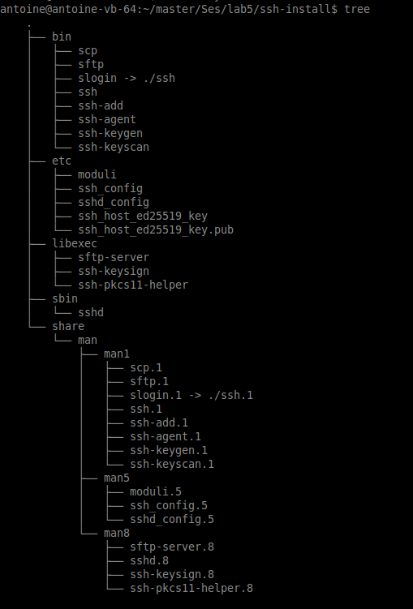
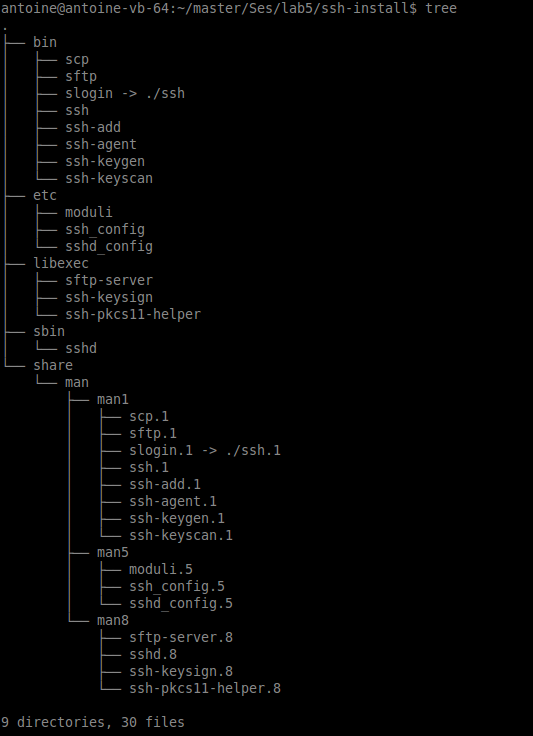
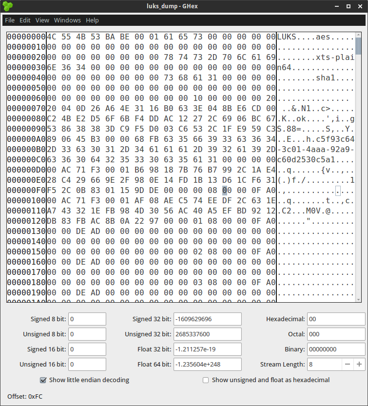
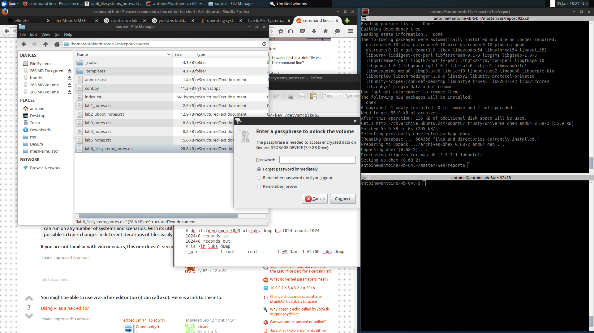

SeS’s reports¶
Antoine Zen-Ruffinen, Yann Maret
Contents:
- Lab 1: Odoid Buildroot installation
- Lab 2: U-Boot
- Lab 3: Kernel configuration
- Lab 3: Valgrind
- Lab 5: Hardening Linux
- Lab 6: File Systems
- Question 1: EXT4
- Question 2: Mount EXT4 “usr” partition
- Question 3: EXT4 journaling
- Question 4: SQUASHFS
- Question 5: SQUASHFS partition
- Question 6.1: LUKS, cryptsetup, dmcrypt
- Question 6.2 : LUKS, cryptsetup option
- Question 6.3 : LUKS test 1
- Question 6.4: rootfs in a LUKS partition
- Question 7: initramfs
- Question 8: initramfs-LUKS partition
- Annexes
- Base installation script
- Shifted bl1 installation script
- Shifted bl3 installation script
- Shifted Device tree installation script
- Shifted Trust-Zone installation script
- Shifted u-boot installation script
- Shifted uImage installation script
- Base installation script with kenel and device tree in part. 1
- Stack protection test program & Makefile
Lab 1: Odoid Buildroot installation¶
The setup of the buildroot project should be straight forward as given in the laboratory handout:
# Create a dir to work in
$ mkdir ~/workspace
$ cd ~/workspace
# Checkout the required resources
$ git clone -o upstream https://forge.tic.eia-fr.ch/git/es4-1415/xu3.git
$ cd ~/workspace/xu3
$ git clone git://git.buildroot.net/buildroot
$ cd buildroot git checkout -b xu3 2014.11
# Patch what is required for the lab to work
$ patch -p1 < ~/workspace/xu3/scripts/config/buildroot-xu3.patch
# Install root-fs creation script
$ cp ~/workspace/xu3/scripts/config/rootfs-ext.tar board/hardkernel/xu3
$ chmod +x board/hardkernel/xu3/post_image_creation.sh
$ chmod +x board/hardkernel/xu3/pre_image_creation.sh
# Build the images
$ make odroidxu3_defconfig
$ make
Unfortunately, this does not work on my machine. Make gives the following error:
Cannot execute cross-compiler '/home/antoine/workspace/xu3/buildroot/output/host/opt/ext-toolchain/bin/arm-linux-gnueabihf-gcc'
make: *** [/home/antoine/workspace/xu3/buildroot/output/build/toolchain-external-undefined/.stamp_configured] Error 1
if we try to call the compiler by hand, the error is then the following:
antoine@antoine-vb-64:~/workspace/xu3/buildroot/output/host/opt/ext-toolchain/bin$ ./arm-linux-gnueabihf-gcc
./arm-linux-gnueabihf-gcc: error while loading shared libraries: libstdc++.so.6: cannot open shared object file: No such file or directory
if we look for the shared libraries above, we can see that it is included in the following places, so there is no reason for gcc no to find id:
$ sudo find / -name libstdc++.so.6
[sudo] password for antoine:
/home/antoine/workspace/xu3/buildroot/output/host/opt/ext-toolchain/arm-linux-gnueabihf/lib/libstdc++.so.6
/usr/lib/x86_64-linux-gnu/libstdc++.so.6
Looking at the given GCC, it appears to be 32 bits executable:
antoine@antoine-vb-64:~/workspace/xu3/buildroot/output/host/opt/ext-toolchain/bin$ file arm-linux-gnueabihf-gcc-4.9.2
arm-linux-gnueabihf-gcc-4.9.2: ELF 32-bit LSB executable, Intel 80386, version 1 (SYSV), dynamically linked (uses shared libs), for GNU/Linux 2.6.15, stripped
My machine is 64 bits:
antoine@antoine-vb-64:~$ uname -a
Linux antoine-vb-64 3.16.0-49-generic #65~14.04.1-Ubuntu SMP Wed Sep 9 10:03:23 UTC 2015 x86_64 x86_64 x86_64 GNU/Linux
So to solve this, we need to install the following 32 bits libraries:a
sudo apt-get install lib32stdc++6 zlib1g:i386
Lab 2: U-Boot¶
Question 1: Check different mapping¶
In this question, we check what appends if we move the different parts that are copied to the eMMC card that is used as boot media. For each configuration, a script has been written to test the case. Each script is a modified version of the original installation script. Please find them in annexe to this documents.
Here after are the result when we move the different parts:
Move of bl1.bin (see 1_shift_bl1.sh): System does not boot, no print out on serial console.
Move of bl2.bin (see 1_shift_bl2.sh): Same Result.
Move of u-boot (see 1_shift_u-boot.sh): System does not boot, no print out on serial console, but fan in running.
Move of tzwf (see 1_shift_tzws.sh): Same Result.
Move of uImage (see 1_shift_uImage.sh): The u-boot can not find the kernel:
U-Boot 2012.07 (Sep 16 2015 - 10:15:20) for Exynos5422 CPU: Exynos5422 Rev0.1 [Samsung SOC on SMP Platform Base on ARM CortexA7] APLL = 800MHz, KPLL = 800MHz MPLL = 532MHz, BPLL = 825MHz Board: HardKernel ODROID DRAM: 2 GiB WARNING: Caches not enabled TrustZone Enabled BSP BL1 version: VDD_KFC: 0x44 LDO19: 0xf2 Checking Boot Mode ... SDMMC MMC: S5P_MSHC2: 0, S5P_MSHC0: 1 MMC Device 0: 7.4 GiB MMC Device 1: [ERROR] response error : 00000006 cmd 8 [ERROR] response error : 00000006 cmd 55 [ERROR] response error : 00000006 cmd 2 *** Warning - bad CRC, using default environment In: serial Out: serial Err: serial Net: No ethernet found. Press 'Enter' or 'Space' to stop autoboot: 0 MMC read: dev # 0, block # 17647, count 256 ... there are pending interrupts 0x00000001 256 blocks read: OK MMC read: dev # 0, block # 1263, count 16384 ... 16384 blocks read: OK Wrong Image Format for bootm command ERROR: can't get kernel image! ODROIDXU3>Move of the “Flattened Device Tree” (see 1_shift_device_tree.sh): U-Boot complains that it can not find it:
U-Boot 2012.07 (Sep 16 2015 - 10:15:20) for Exynos5422 CPU: Exynos5422 Rev0.1 [Samsung SOC on SMP Platform Base on ARM CortexA7] APLL = 800MHz, KPLL = 800MHz MPLL = 532MHz, BPLL = 825MHz Board: HardKernel ODROID DRAM: 2 GiB WARNING: Caches not enabled TrustZone Enabled BSP BL1 version: VDD_KFC: 0x44 LDO19: 0xf2 Checking Boot Mode ... SDMMC MMC: S5P_MSHC2: 0, S5P_MSHC0: 1 MMC Device 0: 7.4 GiB MMC Device 1: [ERROR] response error : 00000006 cmd 8 [ERROR] response error : 00000006 cmd 55 [ERROR] response error : 00000006 cmd 2 *** Warning - bad CRC, using default environment In: serial Out: serial Err: serial Net: No ethernet found. Press 'Enter' or 'Space' to stop autoboot: 0 MMC read: dev # 0, block # 17647, count 256 ... there are pending interrupts 0x00000001 256 blocks read: OK MMC read: dev # 0, block # 1263, count 16384 ... 16384 blocks read: OK ## Booting kernel from Legacy Image at 40007000 ... Image Name: Linux-3.10.63 Image Type: ARM Linux Kernel Image (uncompressed) Data Size: 3282576 Bytes = 3.1 MiB Load Address: 40008000 Entry Point: 40008000 Verifying Checksum ... OK ERROR: Did not find a cmdline Flattened Device Tree Could not find a valid device tree ODROIDXU3>
Question 2: Verify the kernel’s checksum¶
In this question, we modify a byte inside the kernel compiled image. The goal of this, is to check wetter or not U-Boot is able to detect it. If, it detect the error, it should not boot the image.
Using the following command, we can modify the kernel image:
$ cd ~/workspace/xu3/buildroot/output/images
$ cp uImage uImage.orig
$ hexedit uImage
# <modify some byte> Ctrl+x
$ cd ~/master/SeS
./0_base_sd_install.sh
Then U-Boot show the following error:
U-Boot 2012.07 (Sep 16 2015 - 10:15:20) for Exynos5422
CPU: Exynos5422 Rev0.1 [Samsung SOC on SMP Platform Base on ARM CortexA7]
APLL = 800MHz, KPLL = 800MHz
MPLL = 532MHz, BPLL = 825MHz
Board: HardKernel ODROID
DRAM: 2 GiB
WARNING: Caches not enabled
TrustZone Enabled BSP
BL1 version:
VDD_KFC: 0x44
LDO19: 0xf2
Checking Boot Mode ... SDMMC
MMC: S5P_MSHC2: 0, S5P_MSHC0: 1
MMC Device 0: 7.4 GiB
MMC Device 1: [ERROR] response error : 00000006 cmd 8
[ERROR] response error : 00000006 cmd 55
[ERROR] response error : 00000006 cmd 2
*** Warning - bad CRC, using default environment
In: serial
Out: serial
Err: serial
Net: No ethernet found.
Press 'Enter' or 'Space' to stop autoboot: 0
MMC read: dev # 0, block # 17647, count 256 ... there are pending interrupts 0x00000001
256 blocks read: OK
MMC read: dev # 0, block # 1263, count 16384 ... 16384 blocks read: OK
## Booting kernel from Legacy Image at 40007000 ...
Image Name: Linux-3.10.63
Image Type: ARM Linux Kernel Image (uncompressed)
Data Size: 3282576 Bytes = 3.1 MiB
Load Address: 40008000
Entry Point: 40008000
Verifying Checksum ... Bad Data CRC
ERROR: can't get kernel image!
Question 3: Change The mapping¶
The goal of this question is to change the Image mapping of the eMMC card. We will now have the kernel and the “Flattened device tree” in a partition instead having them in the raw space before the root file-system.
To archive this, modifiy lines 509:515 of file ~/workspace/xu3/buildroot/output/build/uboot-eiafr-3/includes/configs/odroid.h
"mmcboot=" \
"run addttyargs addmmcargs addipargs; " \
"ext2load mmc 0:1 ${fdts_addr} exynos5422-odroidxu3.dtb; " \
"ext2load mmc 0:1 ${kernel_addr} uImage; " \
"bootm ${kernel_addr} - ${fdts_addr}\0"
and line 494:495 (to tell that the rootfs is now second partition) :
"addmmcargs=setenv bootargs ${bootargs} " \
"root=/dev/mmcblk0p2 rw rootwait rootfstype=ext4\0" \
Then in ~/workspace/xu3/buildroot/output/build/uboot-eiafr-3/ do:
$ export ARCH=arm
$ export CROSS_COMPILE=arm-linux-gnueabihf-
$ export PATH=$PATH:~/workspace/xu3/buildroot/output/host/opt/ext-toolchain/bin
$ make mrproper
$ make odroid_config
$ make
$ cp u-boot.bin ../../images
Then we can use the script made on question 2 to build the eMMC image. The script is given in annexe
and is called 3_partition_sd_install.sh.
Question 4 : Change network initialization¶
When the system boot, there is a timeout of 120s for the network to be ready. This is annoying and we want to configure the network from the file-system instead of having it configured on the kernel’s arguments. So we need to do the following actions:
- Modify u-boot to not pass IP configuration to the kernel
- Setup a network config file in the root-fs.
1) Modify the u-boot configuration in order u-boot don’t initialize the network¶
First, remove the IP options from the kernel arguments. For this modify again line 509:515 of ~/workspace/xu3/buildroot/output/build/uboot-eiafr-3/includes/configs/odroid.h in this way:
"mmcboot=" \
"run addttyargs addmmcargs; " \
"ext2load mmc 0:1 ${fdts_addr} exynos5422-odroidxu3.dtb; " \
"ext2load mmc 0:1 ${kernel_addr} uImage; " \
"bootm ${kernel_addr} - ${fdts_addr}\0" \
"erase_env=mmc erase user 0 0x4cf 0x20\0"
as this header file has been modified, we need to build u-boot again and copy it to the image folder
$ make clean
$ make
$ cp u-boot.bin ../../images
2) Modify “/etc/network/interfaces”¶
The /etc/network/interfaces file must look like this:
# Configure Loop-back
auto lo
iface lo inet loopback
# Configure Ethernet port 0
auto eth0
iface eth0 inet static
address 192.168.0.11
netmask 255.255.255.0
gateway 192.168.0.4
3) Place the new configuration file in the root-fs¶
We want the /etc/network/interface to be included with the root-fs image to the correct place.
So we will add this to ~/workspace/xu3/buildroot/system/skeleton/etc/network/interfaces. Copy this file to the output folder
to avoid a clean.
$ cp ~/workspace/xu3/buildroot/system/skeleton/etc/network/interfaces ~/workspace/xu3/buildroot/output/target/etc/network/
4) Add new software to the root-fs¶
For the next laboratories, we need the following other package:
- dhcp server
- dhcp client
- iw
- wpa-supplication
- tune2fs (busybox applet)
To add the buildroot package, use “make menuconfig” and navigate to “Target Packages > Networking applications” and check “dhcp (ISC)”, “dhcp server”, “dhcp client”, “iw” and “wpa-supplicant”. Save and exit To add the “tune2fs” busybox command use “make busybox-menuconfig”. Naviagate to “Linux Ext2 FS Progs” and check “tune2fs”. Save and exit.
5) Generate the new root-fs and install it on the eMMC¶
Type “make” to update the image. Re install with the script created in Question 2 to write the images to the SD-Card.
After booting the Odroid, we can check that the commands are present using the “which” command:
$ which dhcpd
/usr/sbin/dhcpd
$ which dhclient
/usr/sbin/dhclient
$ which iw
/usr/sbin/iw
$ which wpa_supplicant
/usr/sbin/wpa_supplicant
$ which tune2fs
/sbin/tunne2fs
Question 5: Add stack protection to u-boot.¶
In this part, we take advantage of GCC’s compilation that enables to improve the code security.
1) Modify u-boot’s compilation option in order to improve the code security¶
Modify ~/workspace/xu3/buildroot/output/build/uboot-eiafr-3/config.mk at line 184:192 to the following:
DBGFLAGS= -g # -DDEBUG
OPTFLAGS= -Os -fstack-protector-all #-fomit-frame-pointer
OBJCFLAGS += --gap-fill=0xff
gccincdir := $(shell $(CC) -print-file-name=include)
CPPFLAGS := $(OPTFLAGS) $(RELFLAGS) \
-D__KERNEL__
On CPFLAGS, the inclusion of DBGFLAGS has been removed. On OPTFLAGS -fstack-protector-all has been added.
To compile the modified u-boot:
$ make clean
$ make
We can see that the -g options has been removed and the -fstack-protector-all has been added on the make output:
arm-linux-gnueabihf-gcc -Os -fstack-protector-all -fno-common -ffixed-r8 -mfloat-abi=hard -mfpu=vfpv3 -D__KERNEL__ -DCONFIG_SYS_TEXT_BASE=0x43E00000 -DCONFIG_SPL_TEXT_BASE=0x02027000 -I/home/antoine/workspace/xu3/buildroot/output/build/uboot-eiafr-3/include -fno-builtin -ffreestanding -nostdinc -isystem /home/antoine/workspace/xu3/buildroot/output/host/opt/ext-toolchain/bin/../lib/gcc/arm-linux-gnueabihf/4.9.2/include -pipe -DCONFIG_ARM -D__ARM__ -marm -mno-thumb-interwork -mabi=aapcs-linux -march=armv7ve -mno-unaligned-access -Wall -Wstrict-prototypes -fno-stack-protector -Wno-format-nonliteral -Wno-format-security -fstack-usage -fno-toplevel-reorder -o hello_world.o hello_world.c -c
after the build, copy the file to the output image folder
$ cp u-boot.bin ../../images/
we can then rebuild the SD-Card using the script from question 2.
2) Write a small program on the PC to test the stack protection¶
The following program was written:
void bad_function()
{
int i;
// Declare an array of 16 int on the stack.
int some_array[16];
// Overflow the array on the stack
for(i=0; i < 24; i++)
{
some_array[i] = i;
}
}
void good_function()
{
int i;
// Declare an array of 16 int on the stack.
int some_array[16];
// Overflow the array on the stack
for(i=0; i < 16; i++)
{
some_array[i] = i;
}
}
int main()
{
good_function();
bad_function();
return 0;
}
A small makefile enable to compile it:
TOOLCHAIN = ~/workspace/xu3/buildroot/output/host/opt/ext-toolchain/bin
CROSS_COMPILE = arm-linux-gnueabihf-
GCC = $(TOOLCHAIN)/$(CROSS_COMPILE)gcc
CFLAGS = -fstack-protector-all
canary_prog: canary_prog.c
$(GCC) $(CFLAGS) -o $@ $<
We can copy it to the “usrfs” of the SD-Card. After booting the Odroid, we can try to run it:
# Mount the "usrfs" patition
$ mount /dev/mmcblk0p2 /mnt
$ cd /mnt
$ ./canary_prog
*** stack smashing detected ***: ./canary_prog terminated
Aborted
by decompiling it and comparing with the same program compiled without the “-fstack-protector-all” options, we can see that the following code is added at enter of a function:
10496: f240 6398 movw r3, #1688 ; 0x698
1049a: f2c0 0302 movt r3, #2
1049e: 681b ldr r3, [r3, #0]
... Rest of the function.
Lab 3: Kernel configuration¶
Question 1: Configure a secure kernel¶
The goal here is to have a running Linux kernel with the following options:
- Enabled random generator
- Enabled TCP Syn Cookie protection
- Randomize_va-Space option
- Write protected kernel text sections
- Filtered access to /dev/mem
- Strip assembler-generated symbols
- Enable –fstack-protector option
- Restrict unprivileged access to kernel (dmesg)
- Enable SELinux
- Disable IPv6
To obtain the menu to configure the kernel, first navigate to the buildroot root, then run the command from the Makefile:
$ cd ~/workspace/xu3/buildroot
$ make linux-xconfig
after the right options have been disabled, just type:
$ make
Once the compilation is ended, copy the fresh kernel to the eMMC-Card:
$ sudo cp ~/workspace/xu3/buildroot/output/images/uImage /media/<users>/bootfs/
The uSD-Card can then be inserted into the Odroid and the system can be booted. After the boot, we can verify that we are running the fresh kernel using the uname command:
$ uname -a
Linux odroidxu3 3.10.63 #1 SMP PREEMPT Tue Oct 27 08:55:42 CET 2015 armv7l GNU/Linux
The date & time in the command output should match with kernel compilation time.
Question 2: Check the syn-coockies¶
The goal here is to check that the new kernel is proof to ‘syn-cookie’ attack. It is possible to disable the syn-cookie attack protection at run time using the following command:
# sysctl -w net.ipv4.tcp_syncookies=0
$ net.ipv4.tcp_syncookies = 0
We can monitor what append with netstat:
$ watch -n2 netstat -atn
the -a options tels netstat that we want to show established connection and non-established connections. The -t options tell that we want to see TCP connections. The -n options tells that we want to see the addresses in numerical format. The watch -n2 enable to update the netstat command every two seconds.
On the host machine, we need to temporary change the IP address to be in the same net as the Odroid. This can be archived using the following command:
$ sudo ifconfig eth0 192.168.0.12 netmask 255.255.255.0 up
We can check that this is effective using a “ping” command
$ ping 192.168.1.11
The IP address was configured in the previous Lab, using “/etc/network/interfaces”.
To make the attack, open scapy in root mode:
$ sudo scapy
This open an IPython shell with the current name-space populated with Scapy objects. This is convenient to build attacks. First we need to define our syn-cookies packet:
In [1]: p = IP(dst='192.168.0.11', id=1111, ttl=99)/TCP(sport=RandShort(), dport=22, seq=12345, ack=1000, window=1000, flags='S')/'HaX0r SVP'
Also we need to block the TCP reset that will be placed by the Host Linux when he receive the SYN/ACK from the Odroid:
$ sudo iptables -A OUTPUT -p tcp -s 192.168.0.12 --tcp-flags RST RST -j DROP
Question 3: Activate the WiFi¶
1) Find the approrpiate Linux diver¶
To find which driver we need to add to the buildroot image, we simply plug the USB network adapter into the host PC and observes the kernel logs:
$ dmsg
....
[ 5646.374861] rtl8192cu: MAC address: 74:da:38:02:44:e1
[ 5646.374868] rtl8192cu: Board Type 0
[ 5646.377664] rtl_usb: rx_max_size 15360, rx_urb_num 8, in_ep 1
[ 5646.377722] rtl8192cu: Loading firmware rtlwifi/rtl8192cufw_TMSC.bin
[ 5646.378175] usbcore: registered new interface driver rtl8192cu
[ 5646.396422] ieee80211 phy0: Selected rate control algorithm 'rtl_rc'
[ 5646.398272] rtlwifi: wireless switch is on
[ 5646.425397] rtl8192cu: MAC auto ON okay!
[ 5646.964307] rtl8192cu: Tx queue select: 0x05
[ 5648.229120] IPv6: ADDRCONF(NETDEV_UP): wlan0: link is not ready
So it appears that 3 kernel modules are involved here:
- rtl8192cu
- rtl_usb
- rtlwifi
2) Activate this drive to the kernel¶
The drivers are located here:
$ antoine@antoine-vb-64:~/workspace/xu3/buildroot/output/build/linux-eiafr-5/drivers$ find . -name *rtl8192cu*
./net/wireless/rtl8192cu_v40
./net/wireless/rtl8192cu_v40/hal/rtl8192c/usb/rtl8192cu_xmit.o
./net/wireless/rtl8192cu_v40/hal/rtl8192c/usb/rtl8192cu_recv.o
./net/wireless/rtl8192cu_v40/hal/rtl8192c/usb/.rtl8192cu_recv.o.cmd
./net/wireless/rtl8192cu_v40/hal/rtl8192c/usb/.rtl8192cu_xmit.o.cmd
./net/wireless/rtl8192cu_v40/hal/rtl8192c/usb/rtl8192cu_recv.c
./net/wireless/rtl8192cu_v40/hal/rtl8192c/usb/rtl8192cu_xmit.c
./net/wireless/rtl8192cu_v40/hal/rtl8192c/usb/.rtl8192cu_led.o.cmd
./net/wireless/rtl8192cu_v40/hal/rtl8192c/usb/rtl8192cu_led.o
./net/wireless/rtl8192cu_v40/hal/rtl8192c/usb/rtl8192cu_led.c
./net/wireless/rtlwifi/rtl8192cu
in ~/workspace/xu3/buildroot/output/build/linux-eiafr-5/drivers/net/wireless/Kconfig uncomment line 284:
source "drivers/net/wireless/rtlwifi/Kconfig"
in ~/workspace/xu3/buildroot/output/build/linux-eiafr-5/drivers/net/wireless/Makefile, uncomment line 27:
obj-$(CONFIG_RTLWIFI) += rtlwifi/
Then we need to reconfigure the kernel build system to build the module driver:
$ cd ~/workspace/xu3/buildroot
$ make linux-xconfig
Enable it in “Drivers / Network device support / Wireless LAN” option “Realtek 8192C USB WiFi”
Type “make” to build the image
We need to copy the new kernel and RootFS to the uSDCard. For this we have a new install script that place only the kernel and RootFS. The file is “4_copy_kernel_rootfs.hs”
Then we do on the Odroid the command to activate the kernel module driver:
$ modprobe rtl8192cu
It will complain that the firmware file is missing. Just copy all rtwifi firmware from the host PC to the uSD card:
$ sudo cp -r /lib/firmware/rtlwifi /media/antoine/e3409f1a-2196-4d11-97c8-36c81d0fd6af/lib/firmware/
We can then install The kernel module:
$ insmod rtl8192cu
4) Configure the WiFi authentication (wpa_supplicant)¶
The WiFi authentication and security is manage by the wpa_supplicant deamon. It need the /etc/wpa.supplicant.conf config file:
ctrl_interface=/var/run/wpa_supplicant
ap_scan=1
network={
key_mgmt=WPA-PSK
ssid="SeS"
scan_ssid=1
proto=RSN
pairwise=CCMP
group=CCMP
psk="A*/1deGr"
}
5)Configure the wireless network (IP part)¶
We need to add the configuration option for the new network interface to /etc/network/interfaces:
auto wlan0
pre-up wpa_supplicatn -B -iwlan0
Then we need to restart the network using:
$ /etc/init.d/S40network restart
It complain that the interface might already be used:
Successfully initialized wpa_supplicant
ctrl_iface exists and seems to be in use - cannot override it
Delete '/var/run/wpa_supplicant/wlan0' manually if it is not used anymore
Failed to initialize control interface '/var/run/wpa_supplicant'.
You may have another wpa_supplicant process already running or the file was
left by an unclean termination of wpa_supplicant in which case you will need
to manually remove this file before starting wpa_supplicant again.
So we need to delete the file mentioned:
$ rm /var/run/wpa_supplicant/wlan0
We can restart the network again:
$ /etc/init.d/S40network restart
And this time, we get an IP address !:
Stopping network...[ 754.271642] [c4] smsc95xx 1-1.1:1.0 eth0: hardware isn't capable of remote wakeup
ifdown: interface wlan0 not configured
Starting network...
[ 754.372258] [c4] smsc95xx 1-1.1:1.0 eth0: hardware isn't capable of remote wakeup
Successfully initialized wpa_supplicant
udhcpc (v1.22.1) started
Sending discover...
[ 757.430149] [c0] wlan0: deauthenticating from 20:aa:4b:c5:17:35 by local choice (reason=2)
[ 757.456276] [c0] cfg80211: Calling CRDA to update world regulatory domain
[ 757.463107] [c0] wlan0: authenticate with 20:aa:4b:c5:17:35
[ 757.480052] [c0] wlan0: send auth to 20:aa:4b:c5:17:35 (try 1/3)
[ 757.487129] [c0] wlan0: authenticated
[ 757.493669] [c2] wlan0: associate with 20:aa:4b:c5:17:35 (try 1/3)
[ 757.503521] [c0] wlan0: RX AssocResp from 20:aa:4b:c5:17:35 (capab=0x431 status=0 aid=1)
[ 757.510210] [c0] rtlwifi:addbareq_rx():<100-1> sta is NULL
[ 757.516130] [c0] wlan0: associated
Sending discover...
Sending select for 192.168.1.105...
Sending select for 192.168.1.105...
Sending select for 192.168.1.105...
Lease of 192.168.1.105 obtained, lease time 86400
deleting routers
adding dns 192.168.1.1
Success !
Lab 3: Valgrind¶
Question 1: bitmap.c¶
The goal of this question is to execice the following valgrind commands:
- memcheck
- sgcheck
- massiv
We first need to compile the test program bitmap.C
$ gcc -Wall -g -o bitmap bitmap.C -lstdc++
the -Wall option turn on all warnings. The -g option enable to produce the debug symbol that will be processed by valgrind. The -o options enable to specify the output file name. the -lstd++ specify to link the executable against C++ runtime library.
1) memcheck¶
Then we can run valgrind on the compliated program:
$ valgrind --tool=memcheck ./bitmap
==7246== Memcheck, a memory error detector
==7246== Copyright (C) 2002-2013, and GNU GPL'd, by Julian Seward et al.
==7246== Using Valgrind-3.10.0.SVN and LibVEX; rerun with -h for copyright info
==7246== Command: ./bitmap
==7246==
==7246== Invalid read of size 1
==7246== at 0x400B2C: steganographyEncrypt(char const*, char const*, char const*) (bitmap.C:163)
==7246== by 0x4007D4: main (bitmap.C:68)
==7246== Address 0x5b1e26e is 2 bytes after a block of size 1,132 alloc'd
==7246== at 0x4C2B800: operator new[](unsigned long) (in /usr/lib/valgrind/vgpreload_memcheck-amd64-linux.so)
==7246== by 0x400A7A: steganographyEncrypt(char const*, char const*, char const*) (bitmap.C:137)
==7246== by 0x4007D4: main (bitmap.C:68)
==7246==
==7246==
==7246== HEAP SUMMARY:
==7246== in use at exit: 4,200 bytes in 1 blocks
==7246== total heap usage: 536 allocs, 535 frees, 1,026,724 bytes allocated
==7246==
==7246== LEAK SUMMARY:
==7246== definitely lost: 4,200 bytes in 1 blocks
==7246== indirectly lost: 0 bytes in 0 blocks
==7246== possibly lost: 0 bytes in 0 blocks
==7246== still reachable: 0 bytes in 0 blocks
==7246== suppressed: 0 bytes in 0 blocks
==7246== Rerun with --leak-check=full to see details of leaked memory
==7246==
==7246== For counts of detected and suppressed errors, rerun with: -v
==7246== ERROR SUMMARY: 240 errors from 1 contexts (suppressed: 0 from 0)
As valgrind recommend to re-run it with the –leak-check=full option, lets do it:
$ valgrind --tool=memcheck --leak-check=full ./bitmap
==7248== Memcheck, a memory error detector
==7248== Copyright (C) 2002-2013, and GNU GPL'd, by Julian Seward et al.
==7248== Using Valgrind-3.10.0.SVN and LibVEX; rerun with -h for copyright info
==7248== Command: ./bitmap
==7248==
==7248== Invalid read of size 1
==7248== at 0x400B2C: steganographyEncrypt(char const*, char const*, char const*) (bitmap.C:163)
==7248== by 0x4007D4: main (bitmap.C:68)
==7248== Address 0x5b1e26e is 2 bytes after a block of size 1,132 alloc'd
==7248== at 0x4C2B800: operator new[](unsigned long) (in /usr/lib/valgrind/vgpreload_memcheck-amd64-linux.so)
==7248== by 0x400A7A: steganographyEncrypt(char const*, char const*, char const*) (bitmap.C:137)
==7248== by 0x4007D4: main (bitmap.C:68)
==7248==
==7248==
==7248== HEAP SUMMARY:
==7248== in use at exit: 4,200 bytes in 1 blocks
==7248== total heap usage: 536 allocs, 535 frees, 1,026,724 bytes allocated
==7248==
==7248== 4,200 bytes in 1 blocks are definitely lost in loss record 1 of 1
==7248== at 0x4C2B800: operator new[](unsigned long) (in /usr/lib/valgrind/vgpreload_memcheck-amd64-linux.so)
==7248== by 0x4008EA: steganographyEncrypt(char const*, char const*, char const*) (bitmap.C:109)
==7248== by 0x4007D4: main (bitmap.C:68)
==7248==
==7248== LEAK SUMMARY:
==7248== definitely lost: 4,200 bytes in 1 blocks
==7248== indirectly lost: 0 bytes in 0 blocks
==7248== possibly lost: 0 bytes in 0 blocks
==7248== still reachable: 0 bytes in 0 blocks
==7248== suppressed: 0 bytes in 0 blocks
==7248==
==7248== For counts of detected and suppressed errors, rerun with: -v
==7248== ERROR SUMMARY: 241 errors from 2 contexts (suppressed: 0 from 0)
This reports two error:
- An invalid read, it means an array has been exceeded at line 163.
- A memory leak, from the memory allocated at line 109.
The loop surrounding line 163 is going one pixel to far. So we should correct the line 161 to:
for (j=0; j<(widthLoop+1); j=j+1, hiddenText.p_rgb++)
{
...
}
And the memory allocated at line 109 is not freed. So we need to free it at the end of the functions. For this, the following instrctuion was added after line 189:
delete [] bitmap.p_buffer;
A diff of the file will show:
$ diff -u bitmap.orig bitmap.C
--- bitmap.orig 2015-11-10 10:41:58.757686283 +0100
+++ bitmap.C 2015-11-10 11:10:05.617762542 +0100
@@ -158,7 +158,7 @@
unsigned short j;
- for (j=0; j<(widthLoop+2); j=j+1, hiddenText.p_rgb++)
+ for (j=0; j<(widthLoop+1); j=j+1, hiddenText.p_rgb++)
{
if ((hiddenText.p_rgb->Blue != WHITE) ||
(hiddenText.p_rgb->Green!= WHITE) ||
@@ -187,6 +187,8 @@
{
delete [] *bitmap.p_row;
}
+ delete [] bitmap.p_buffer;
+
fclose(pFileSource);
fclose(pFileDest);
}
Now the same check shows no error:
$ valgrind --tool=memcheck --leak-check=full ./bitmap
==7478== Memcheck, a memory error detector
==7478== Copyright (C) 2002-2013, and GNU GPL'd, by Julian Seward et al.
==7478== Using Valgrind-3.10.0.SVN and LibVEX; rerun with -h for copyright info
==7478== Command: ./bitmap
==7478==
==7478==
==7478== HEAP SUMMARY:
==7478== in use at exit: 0 bytes in 0 blocks
==7478== total heap usage: 536 allocs, 536 frees, 1,026,724 bytes allocated
==7478==
==7478== All heap blocks were freed -- no leaks are possible
==7478==
==7478== For counts of detected and suppressed errors, rerun with: -v
==7478== ERROR SUMMARY: 0 errors from 0 contexts (suppressed: 0 from 0)
2) sgcheck¶
The sgcheck show no error on the program:
$ valgrind --tool=exp-sgcheck ./bitmap
==7485== exp-sgcheck, a stack and global array overrun detector
==7485== NOTE: This is an Experimental-Class Valgrind Tool
==7485== Copyright (C) 2003-2013, and GNU GPL'd, by OpenWorks Ltd et al.
==7485== Using Valgrind-3.10.0.SVN and LibVEX; rerun with -h for copyright info
==7485== Command: ./bitmap
==7485==
--7485-- warning: evaluate_Dwarf3_Expr: unhandled DW_OP_ 0x93
--7485-- warning: evaluate_Dwarf3_Expr: unhandled DW_OP_ 0x93
--7485-- warning: evaluate_Dwarf3_Expr: unhandled DW_OP_ 0x93
--7485-- warning: evaluate_Dwarf3_Expr: unhandled DW_OP_ 0x93
--7485-- warning: evaluate_Dwarf3_Expr: unhandled DW_OP_ 0x93
--7485-- warning: evaluate_Dwarf3_Expr: unhandled DW_OP_ 0x93
--7485-- warning: evaluate_Dwarf3_Expr: unhandled DW_OP_ 0x93
--7485-- warning: evaluate_Dwarf3_Expr: unhandled DW_OP_ 0x93
--7485-- warning: evaluate_Dwarf3_Expr: unhandled DW_OP_ 0x93
--7485-- warning: evaluate_Dwarf3_Expr: unhandled DW_OP_ 0x93
--7485-- warning: evaluate_Dwarf3_Expr: unhandled DW_OP_ 0x93
--7485-- warning: evaluate_Dwarf3_Expr: unhandled DW_OP_ 0x93
--7485-- warning: evaluate_Dwarf3_Expr: unhandled DW_OP_ 0x93
--7485-- warning: evaluate_Dwarf3_Expr: unhandled DW_OP_ 0x93
--7485-- warning: evaluate_Dwarf3_Expr: unhandled DW_OP_ 0x93
--7485-- warning: evaluate_Dwarf3_Expr: unhandled DW_OP_ 0x93
==7485==
==7485== ERROR SUMMARY: 0 errors from 0 contexts (suppressed: 4 from 4)
3) massif¶
Lab 5: Hardening Linux¶
This lab is about installing the latest version of OpenSSH with the correct options to ensure maximum security. We also check that the source package is issued by the right developer to avoid installing untrusted software.
Question 1 : Check the signature of OpenSSH source package¶
The OpenSSH package can be downloaded from the project website or from a mirror. To download the source package and its signature , we can use the following commands:
$ wget http://mirror.switch.ch/ftp/pub/OpenBSD/OpenSSH/portable/openssh-7.1p1.tar.gz
$ wget http://mirror.switch.ch/ftp/pub/OpenBSD/OpenSSH/portable/openssh-7.1p1.tar.gz.asc
If we look into openssh-7.1p1.tar.gz.asc we see that it is a PGP signature.
Then we can check the downloaded archive:
$ gpg --verify openssh-7.1p1.tar.gz.asc openssh-7.1p1.tar.gz
gpg: Signature made Fre 21 Aug 2015 07:10:03 CEST using RSA key ID 6D920D30
gpg: Can't check signature: public key not found
GPG complains that the public key is missing. GPG can download the key automaticaly from the RSA public key ID:
$ gpg --recv-keys 6D920D30
gpg: requesting key 6D920D30 from hkp server keys.gnupg.net
gpg: key 6D920D30: public key "Damien Miller <djm@mindrot.org>" imported
gpg: no ultimately trusted keys found
gpg: Total number processed: 1
gpg: imported: 1 (RSA: 1)
We can retry the verification:
$ gpg --verify openssh-7.1p1.tar.gz.asc openssh-7.1p1.tar.gz
gpg: Signature made Fre 21 Aug 2015 07:10:03 CEST using RSA key ID 6D920D30
gpg: Good signature from "Damien Miller <djm@mindrot.org>"
gpg: WARNING: This key is not certified with a trusted signature!
gpg: There is no indication that the signature belongs to the owner.
Primary key fingerprint: 59C2 118E D206 D927 E667 EBE3 D3E5 F56B 6D92 0D30
Question 2: Configure the package¶
First we need to extract the source package:
$ tar xzf openssh-7.1p1.tar.gz
$ cd openssh-7.1p1/
We need to make the configure script executable and then we can get the options list:
$ chmod u+x configure
$ ./configure --help
`configure' configures OpenSSH Portable to adapt to many kinds of systems.
Usage: ./configure [OPTION]... [VAR=VALUE]...
To assign environment variables (e.g., CC, CFLAGS...), specify them as
VAR=VALUE. See below for descriptions of some of the useful variables.
Defaults for the options are specified in brackets.
Configuration:
-h, --help display this help and exit
--help=short display options specific to this package
--help=recursive display the short help of all the included packages
-V, --version display version information and exit
-q, --quiet, --silent do not print `checking...' messages
--cache-file=FILE cache test results in FILE [disabled]
-C, --config-cache alias for `--cache-file=config.cache'
-n, --no-create do not create output files
--srcdir=DIR find the sources in DIR [configure dir or `..']
Installation directories:
--prefix=PREFIX install architecture-independent files in PREFIX
[/usr/local]
--exec-prefix=EPREFIX install architecture-dependent files in EPREFIX
[PREFIX]
By default, `make install' will install all the files in
`/usr/local/bin', `/usr/local/lib' etc. You can specify
an installation prefix other than `/usr/local' using `--prefix',
for instance `--prefix=$HOME'.
For better control, use the options below.
Fine tuning of the installation directories:
--bindir=DIR user executables [EPREFIX/bin]
--sbindir=DIR system admin executables [EPREFIX/sbin]
--libexecdir=DIR program executables [EPREFIX/libexec]
--sysconfdir=DIR read-only single-machine data [PREFIX/etc]
--sharedstatedir=DIR modifiable architecture-independent data [PREFIX/com]
--localstatedir=DIR modifiable single-machine data [PREFIX/var]
--libdir=DIR object code libraries [EPREFIX/lib]
--includedir=DIR C header files [PREFIX/include]
--oldincludedir=DIR C header files for non-gcc [/usr/include]
--datarootdir=DIR read-only arch.-independent data root [PREFIX/share]
--datadir=DIR read-only architecture-independent data [DATAROOTDIR]
--infodir=DIR info documentation [DATAROOTDIR/info]
--localedir=DIR locale-dependent data [DATAROOTDIR/locale]
--mandir=DIR man documentation [DATAROOTDIR/man]
--docdir=DIR documentation root [DATAROOTDIR/doc/openssh]
--htmldir=DIR html documentation [DOCDIR]
--dvidir=DIR dvi documentation [DOCDIR]
--pdfdir=DIR pdf documentation [DOCDIR]
--psdir=DIR ps documentation [DOCDIR]
System types:
--build=BUILD configure for building on BUILD [guessed]
--host=HOST cross-compile to build programs to run on HOST [BUILD]
Optional Features:
--disable-FEATURE do not include FEATURE (same as --enable-FEATURE=no)
--enable-FEATURE[=ARG] include FEATURE [ARG=yes]
--disable-largefile omit support for large files
--disable-strip Disable calling strip(1) on install
--disable-etc-default-login Disable using PATH from /etc/default/login no
--disable-lastlog disable use of lastlog even if detected no
--disable-utmp disable use of utmp even if detected no
--disable-utmpx disable use of utmpx even if detected no
--disable-wtmp disable use of wtmp even if detected no
--disable-wtmpx disable use of wtmpx even if detected no
--disable-libutil disable use of libutil (login() etc.) no
--disable-pututline disable use of pututline() etc. (uwtmp) no
--disable-pututxline disable use of pututxline() etc. (uwtmpx) no
Optional Packages:
--with-PACKAGE[=ARG] use PACKAGE [ARG=yes]
--without-PACKAGE do not use PACKAGE (same as --with-PACKAGE=no)
--without-openssl Disable use of OpenSSL; use only limited internal crypto **EXPERIMENTAL**
--without-ssh1 Enable support for SSH protocol 1
--without-stackprotect Don't use compiler's stack protection
--without-hardening Don't use toolchain hardening flags
--without-rpath Disable auto-added -R linker paths
--with-cflags Specify additional flags to pass to compiler
--with-cppflags Specify additional flags to pass to preprocessor
--with-ldflags Specify additional flags to pass to linker
--with-libs Specify additional libraries to link with
--with-Werror Build main code with -Werror
--with-solaris-contracts Enable Solaris process contracts (experimental)
--with-solaris-projects Enable Solaris projects (experimental)
--with-osfsia Enable Digital Unix SIA
--with-zlib=PATH Use zlib in PATH
--without-zlib-version-check Disable zlib version check
--with-skey[=PATH] Enable S/Key support (optionally in PATH)
--with-ldns[=PATH] Use ldns for DNSSEC support (optionally in PATH)
--with-libedit[=PATH] Enable libedit support for sftp
--with-audit=module Enable audit support (modules=debug,bsm,linux)
--with-pie Build Position Independent Executables if possible
--with-ssl-dir=PATH Specify path to OpenSSL installation
--without-openssl-header-check Disable OpenSSL version consistency check
--with-ssl-engine Enable OpenSSL (hardware) ENGINE support
--with-prngd-port=PORT read entropy from PRNGD/EGD TCP localhost:PORT
--with-prngd-socket=FILE read entropy from PRNGD/EGD socket FILE (default=/var/run/egd-pool)
--with-pam Enable PAM support
--with-privsep-user=user Specify non-privileged user for privilege separation
--with-sandbox=style Specify privilege separation sandbox (no, darwin, rlimit, systrace, seccomp_filter, capsicum)
--with-selinux Enable SELinux support
--with-kerberos5=PATH Enable Kerberos 5 support
--with-privsep-path=xxx Path for privilege separation chroot (default=/var/empty)
--with-xauth=PATH Specify path to xauth program
--with-maildir=/path/to/mail Specify your system mail directory
--with-mantype=man|cat|doc Set man page type
--with-md5-passwords Enable use of MD5 passwords
--without-shadow Disable shadow password support
--with-ipaddr-display Use ip address instead of hostname in $DISPLAY
--with-default-path= Specify default $PATH environment for server
--with-superuser-path= Specify different path for super-user
--with-4in6 Check for and convert IPv4 in IPv6 mapped addresses
--with-bsd-auth Enable BSD auth support
--with-pid-dir=PATH Specify location of ssh.pid file
--with-lastlog=FILE|DIR specify lastlog location common locations
Some influential environment variables:
CC C compiler command
CFLAGS C compiler flags
LDFLAGS linker flags, e.g. -L<lib dir> if you have libraries in a
nonstandard directory <lib dir>
LIBS libraries to pass to the linker, e.g. -l<library>
CPPFLAGS C/C++/Objective C preprocessor flags, e.g. -I<include dir> if
you have headers in a nonstandard directory <include dir>
CPP C preprocessor
Use these variables to override the choices made by `configure' or to help
it to find libraries and programs with nonstandard names/locations.
Report bugs to <openssh-unix-dev@mindrot.org>.
So for the lab, we need the following options:
- –without-openssh
- –without-ssh1
- –with-pie
- –prefix=`pwd`/install
We can now configure & build the package:
$ ./configure --without-openssl --without-ssh1 --with-pie --prefix=/home/antoine/master/Ses/lab5/ssh-install
$ make
$ sudo make install
We can see that the following was installed in /home/antoine/master/Ses/lab5/ssh-install`:

We can delete this tree as we don’t need it. We will recompile it, but for the ARM processor.
Question 3: Configure for the odroid¶
We try now to cross-compile for the odroid. We need to specify the gcc compiler to use by specifying the host prefix. Before this, we need to put the cross-compiler on the PATH, so that the configure script is able to find it:
$ export PATH=/home/antoine/workspace/xu3/buildroot/output/host/usr/bin:$PATH
$ ./configure --without-openssl --without-ssh1 --with-pie --prefix=/home/antoine/master/Ses/lab5/ssh-install --host=arm-linux-gnueabihf
$ make
$ make install
The last step (make install) will fail as it don’t use the right strip utility. To correct this, we need to edit the Makefile to tell it to use the right utility, as we need the ARM version of it. So we need to change line 35 in the Makefile
STRIP_OPT=-s --strip-program=arm-linux-gnueabihf-strip
We can then redo the install
$ make install
Despite the error, we have the same tree installed:

We can see that we have an executable for the ARM machine:
antoine@antoine-vb-64:~/master/Ses/lab5/ssh-install$ file sbin/sshd
sbin/sshd: ELF 32-bit LSB shared object, ARM, EABI5 version 1 (SYSV), dynamically linked (uses shared libs), for GNU/Linux 3.1.1, BuildID[sha1]=a220decacaf8a2d54a8c26802898a631964103b4, stripped
Question 4: Install on the Odroid¶
We can copy the installation to the root fs:
$ sudo cp -r * /media/antoine/rootfs/
Question 5: Configure ssh¶
We need to add the following options to /etc/sshd_config
# Force use of IPv4 only
Port 22
ListenAddress 0.0.0.0
# Force use of protocol version 2
Protocol 2
# Disable port forwarding
AllowTcpForwarding no
# Select the allowed cyphers
Ciphers aes256-cbc, aes256-ctr, aes128-cbc, blowfish-cbc, 3des-cbc, hmac-sha256, hmac-sha1
# Enable privilege separation
UsePrivilegeSeparation yes
# Don't allow root to login
PermitRootLogin no
# Give a banner file
Banner /etc/sshd_banner
Lab 6: File Systems¶
Question 1: EXT4¶
In this part we investigate the current eMMC card file systems. On the Odroid, we can use the mount command to list the used (“mounted”) partitions:
# mount
rootfs on / type rootfs (rw)
/dev/root on / type ext4 (rw,relatime,errors=remount-ro,data=ordered)
devtmpfs on /dev type devtmpfs (rw,relatime,size=765332k,nr_inodes=121035,mode=755)
proc on /proc type proc (rw,relatime)
devpts on /dev/pts type devpts (rw,relatime,gid=5,mode=620)
tmpfs on /dev/shm type tmpfs (rw,relatime,mode=777)
tmpfs on /tmp type tmpfs (rw,relatime)
sysfs on /sys type sysfs (rw,relatime)
We will look at the following question:
- What is the real name for the node file
/dev/root?- What are the major and minor number for the
/dev/rootnode file ?- How the kernel knows that the rootfs in in the second partition ?
1) Real name of /dev/root¶
To know the real name of /dev/root we can use the ls command to see what kind of file it is (could be a node or a sym-link):
# ls -l /dev/root
lrwxrwxrwx 1 root root 9 Jan 1 00:00 /dev/root -> mmcblk0p2
We can see here that this file is a sym-link to mmcblk0p2. We can interpret this file name as “MMC block 0 , partition 2.
2) Major and minor number of the node file¶
Again, the ls command commes to our resque to find the major and minor numbers:
# ls -l /dev/mmcblk0p2
brw-rw---- 1 root root 179, 2 Jan 1 00:00 /dev/mmcblk0p2
So we can see that for our root file system the major and minor numbers are 179 and 2.
3) How the kernel knows where is the rootfs¶
The kernel knows it beacause it was given as parameter at boot time by the boot-loader. This is given by the root argument on the command line. For the current setup this argument was set to /dev/mmcblk0p2. We can see that is the same node file that is pointed by the symlink /dev/root.
This was set in lab2: U-Boot, question 3.
Question 2: Mount EXT4 “usr” partition¶
We are asked to manually mount the “usr” partition and then to add it to /etc/fstab to have it mounted automatically at startup. The “usrfs” is in the third partition represented by the node file /dev/mmcblk0p3.
To mount is manually, we use the following commands:
# mount -t ext4 -o defaults,noatime,discard,nodiratime,data=writeback,acl,user_xattr /dev/mmcblk0p3 /mnt/usrfs
[ 2182.132281] [c4] EXT4-fs (mmcblk0p3): mounting with "discard" option, but the device dod
[ 2182.140812] [c4] EXT4-fs (mmcblk0p3): mounted filesystem with writeback data mode. Optsr
To have it mounted at startup, we modify the /etc/fstab as following (last line added):
# /etc/fstab: static file system information.
#
# <file system> <mount pt> <type> <options> <dump> <pass>
/dev/root / ext2 rw,noauto 0 1
proc /proc proc defaults 0 0
devpts /dev/pts devpts defaults,gid=5,mode=620 0 0
tmpfs /dev/shm tmpfs mode=0777 0 0
tmpfs /tmp tmpfs mode=1777 0 0
sysfs /sys sysfs defaults 0 0
/dev/mmcblk0p3 /mnt/usrfs ext4 defaults,noatime,discard,nodiratime,data=writeback,acl,user_xattr 0 0
The file in buildroot/system/skeleton/etc could be modified as well to have those modifications persisting when making a new root file system.
We also need to create the mounting point directory:
# mkdir /mnt/usrfs
The “<dump>” column is related to backup, we don’t use it here so we can left it to “0”. The “<pass>” column setup the file system check. Here we set that it should be checked after the root-fs, so we set it to valute “2” (zero would mean check is diabled).
After a reboot, we can see that the file system is mounted (last line):
# mount
rootfs on / type rootfs (rw)
/dev/root on / type ext4 (rw,relatime,errors=remount-ro,data=ordered)
devtmpfs on /dev type devtmpfs (rw,relatime,size=765332k,nr_inodes=121035,mode=755)
proc on /proc type proc (rw,relatime)
devpts on /dev/pts type devpts (rw,relatime,gid=5,mode=620)
tmpfs on /dev/shm type tmpfs (rw,relatime,mode=777)
tmpfs on /tmp type tmpfs (rw,relatime)
sysfs on /sys type sysfs (rw,relatime)
/dev/mmcblk0p3 on /mnt/usrfs type ext4 (rw,noatime,nodiratime,data=writeback)
Question 3: EXT4 journaling¶
We are asked to check the write & read performances on a small and a big file with journaling enabled or disabled.
To write those files, two small C program have been made. The first one writes a small file (it write 4 block of 2014 bytes = 4kBytes):
#include <stdio.h>
#include <string.h>
#include <stdlib.h>
#define BLOCK_SIZE 1024
main(int argc, char *argv[])
{
void* ptr;
FILE* f = fopen("generated_file", "w");
int i;
for(i=0; i < 4; i++)
{
ptr = malloc(BLOCK_SIZE);
memset(ptr, 0xAA, BLOCK_SIZE);
fwrite(ptr, BLOCK_SIZE, 1, f);
free(ptr);
}
fclose(f);
}
And the one that writes a big file (it writes 40 block of 1Mbytes = 40Mbytes):
#include <stdio.h>
#include <string.h>
#include <stdlib.h>
#define BLOCK_SIZE (1024*1024)
main(int argc, char *argv[])
{
void* ptr;
FILE* f = fopen("generated_file", "w");
int i;
for(i=0; i < 40; i++)
{
ptr = malloc(BLOCK_SIZE);
memset(ptr, 0xAA, BLOCK_SIZE);
fwrite(ptr, BLOCK_SIZE, 1, f);
free(ptr);
}
fclose(f);
}
We can then use the time command to measure the time it take to run both programs:
# time ./big_write
Command exited with non-zero status 1
real 0m 0.89s
user 0m 0.01s
sys 0m 0.88s
# time ./small_write
Command exited with non-zero status 1
real 0m 0.09s
user 0m 0.00s
sys 0m 0.09s
We can then disable the EXT4 journaling and measure the time for a big and small file:
# cd
# umount /mnt/usrfs/
# tune2fs -O ^has_journal /dev/mmcblk0p3
tune2fs 1.42.12 (29-Aug-2014)
# mount /mnt/usrfs/
[ 844.419881] [c6] EXT4-fs (mmcblk0p3): mounting with "discard" option, but the device does not support discard
[ 844.428370] [c6] EXT4-fs (mmcblk0p3): mounted filesystem without journal. Opts: discard,data=writeback,acl,user_xattr
We can then repeat the measure:
# time ./big_write
Command exited with non-zero status 1
real 0m 0.86s
user 0m 0.00s
sys 0m 0.73s
# time ./small_write
Command exited with non-zero status 1
real 0m 0.08s
user 0m 0.00s
sys 0m 0.08s
We can see that haveing the journaling disabled reduced the execution time of 30ms and 10ms.
Question 4: SQUASHFS¶
We can prepare some data to make the SQUASHFS partition:
# cd /mnt/usrfs
# mkdir sqfs
# cp -r /usr/* sqfs
Then we can create SQUASHFS files with different compressions:
# mksquashfs sqfs/ part.gzip.sqsh -comp gzip
# mksquashfs sqfs/ part.lz4.sqsh -comp lz4
# mksquashfs sqfs/ part.lzma.sqsh -comp lzma
# mksquashfs sqfs/ part.lzo.sqsh -comp lzo
# mksquashfs sqfs/ part.xz.sqsh -comp xz
We can then compare the size of the files created with the various compressions algorithms:
# ls -lh *.sqsh
-rw-r--r-- 1 root root 7.0M Jan 1 00:06 part.gzip.sqsh
-rw-r--r-- 1 root root 10.4M Jan 1 00:07 part.lz4.sqsh
-rw-r--r-- 1 root root 5.6M Jan 1 00:06 part.lzma.sqsh
-rw-r--r-- 1 root root 7.7M Jan 1 00:07 part.lzo.sqsh
-rw-r--r-- 1 root root 5.6M Jan 1 00:08 part.xz.sqsh
This shows that lzma and xz algorithms offers the smallest sizes.
We can then mount any of those partion to the /mnt/sqfs mounting point (we need to create it first):
# cd /mnt
# mkdir sqfs
# mount -t squashfs -o loop /mnt/usrfs/part.gzip.sqsh /mnt/sqfs
mount: mounting on /mnt/sqfs failed: No such device
Note that the support for SQUASHFS must first be enabled in the kernel. In our case it was needed to re-compile a kernel with this support enable. We use make xconfig then searched for SquashFS and selected it. Then a simple make build the new kernel that should then flashed to the MMC card (or copied in the boot partition).
But still, I was not able to mount the partition using loopback on the odroid
Question 5: SQUASHFS partition¶
On the pc, we can create a new partition on the eMMC card. This parition will start at 16MB (bootloader) + 64MB (bootfs) + 256MB (rootfs) + 256MB (usrfs) = 592MB. This represent 1212416 sectors of 512 bytes. It will end at 848MB = sector 1736703. So now that we know the offset, we can create the partition:
antoine@antoine-vb-64:~$ sudo parted /dev/sdb mkpart primary 1212416s 1736703s
Information: You may need to update /etc/fstab.
antoine@antoine-vb-64:~$ sudo fdisk -l /dev/sdb
Disk /dev/sdb: 7948 MB, 7948206080 bytes
245 heads, 62 sectors/track, 1021 cylinders, total 15523840 sectors
Units = sectors of 1 * 512 = 512 bytes
Sector size (logical/physical): 512 bytes / 512 bytes
I/O size (minimum/optimal): 512 bytes / 512 bytes
Disk identifier: 0x000f2984
Device Boot Start End Blocks Id System
/dev/sdb1 32768 163839 65536 83 Linux
/dev/sdb2 163840 688127 262144 83 Linux
/dev/sdb3 688128 1212415 262144 83 Linux
/dev/sdb4 1212416 1736703 262144 83 Linux
We can the copy one squashfs file to the freshly created partition:
antoine@antoine-vb-64:~$ sudo dd if=/media/antoine/usrfs/part.gzip.sqsh of=/dev/sdb4
14424+0 records in
14424+0 records out
7385088 bytes (7.4 MB) copied, 7.5977 s, 972 kB/s
We can then mount it and check that it is really read-only:
antoine@antoine-vb-64:~$ mkdir /mnt/sqfs
antoine@antoine-vb-64:~$ sudo mount -t squashfs /dev/sdb4 /mnt/sqfs
mount: warning: /mnt/sqfs seems to be mounted read-only.
antoine@antoine-vb-64:/mnt/sqfs/bin$ mount | grep sdb4
/dev/sdb4 on /mnt/sqfs type squashfs (ro)
antoine@antoine-vb-64:~$ cd /mnt/sqfs/bin
antoine@antoine-vb-64:/mnt/sqfs/bin$ ls
[ dirname killall lzless pkill slabtop top wget
[[ dos2unix last lzma pmap slogin tr which
ar du less lzmadec printf sort traceroute who
awk eject logger lzmainfo pwdx ssh tty whoami
basename env logname lzmore readlink ssh-add uniq xargs
bunzip2 expr lsattr md5sum realpath ssh-agent unix2dos xz
bzcat find lsof mesg renice ssh-keygen unlzma xzcat
chattr fold lspci microcom reset ssh-keyscan unsquashfs xzcmp
chrt free lsusb mkfifo resize strace unxz xzdec
chvt fuser lz4 mksquashfs scp strace-log-merge unzip xzdiff
cksum gdbserver lz4c nohup seq strings uptime xzegrep
clear head lz4cat nslookup setkeycodes tail uudecode xzfgrep
cmp hexdump lzcat od setsid tee uuencode xzgrep
crontab hostid lzcmp openvt sftp telnet vlock xzless
cut id lzdiff passwd sha1sum test vmstat xzmore
dc install lzegrep patch sha256sum tftp w yes
deallocvt ipcrm lzfgrep pgrep sha3sum time watch
diff ipcs lzgrep pidof sha512sum tload wc
antoine@antoine-vb-64:/mnt/sqfs/bin$ rm watch
rm: cannot remove ‘watch’: Read-only file system
The file cannot be removed, this prof that the file system is read-only.
Question 6.1: LUKS, cryptsetup, dmcrypt¶
We need to add dmcrypt support in the kernel for this, we use the menu configuration:
# cd ~/workspace/xu3/buildroot # make linux-xconfig
Then we need to select the “Crypt target Support”. To find it, the easier it to search (CTRL+F) for dm_crypt and to check the option. Do not forget to save before closing the congiuration.
Then we must confiurue buildroot to comptyte cryptsetup:
# make xconfig
To find the option, to easier is to search (CTRL+F) for cryptsetup. Select it, save the configuraiton and close. Then we can recompile the buildroot environement (it will compile what needed):
# make
We made a new script that just copy the rootfs and the kernel into the bootfs partition:
#!/bin/bash
TARGET_VOLUME=sdb
IMAGEDIR="/home/antoine/workspace/xu3/buildroot/output/images"
echo "Target volume is ${TARGET_VOLUME}"
echo "Image dir is ${IMAGEDIR}"
# Show patition table
echo "Patition table is"
sudo fdisk -l /dev/${TARGET_VOLUME}
sleep 3
if [ -e "/dev/${TARGET_VOLUME}1" ]
then
umount /dev/${TARGET_VOLUME}1
fi
if [ -e "/dev/${TARGET_VOLUME}2" ]
then
umount /dev/${TARGET_VOLUME}2
fi
if [ -e "/dev/${TARGET_VOLUME}3" ]
then
umount /dev/${TARGET_VOLUME}3
fi
if [ -e "/dev/${TARGET_VOLUME}4" ]
then
umount /dev/${TARGET_VOLUME}4
fi
#copy rootfs
echo "Copy rootfs"
sudo dd if=${IMAGEDIR}/rootfs.ext4 of=/dev/${TARGET_VOLUME} bs=512 seek=163840
#copy kernel
sudo mount /dev/${TARGET_VOLUME}1 /mnt
echo "Copy kernel"
sudo cp ${IMAGEDIR}/uImage /mnt/
sudo umount /dev/${TARGET_VOLUME}1
# Show patition table
echo "Patition table is"
sudo fdisk -l /dev/${TARGET_VOLUME}
Question 6.2 : LUKS, cryptsetup option¶
LUKS extension mode of cyrptsetup has the advantage of being standard, to manage multiple password and to be protected against dictionary attacks.
The --hash options specify the has funtion to use on LUKS partition creation. On the Odroid, only sha1 is supported (according to crytpsetup –help).
The default cypher (according to crytpsetup –help) for KUKS partition is “aes-xts-plain64”.
The --key-file option specify the file storing the key.
Question 6.3 : LUKS test 1¶
In this part we test LUKS on the usrfs partition. First, on the odroid, we create initialize the LUKS partition (we need to un-mount the partition first)
# umount /mnt/usrfs/
# cryptsetup --debug luksFormat /dev/mmcblk0p3
# cryptsetup 1.6.6 processing "cryptsetup --debug luksFormat /dev/mmcblk0p3"
# Running command luksFormat.
# Locking memory.
# Installing SIGINT/SIGTERM handler.
# Unblocking interruption on signal.
WARNING!
========
This will overwrite data on /dev/mmcblk0p3 irrevocably.
Are you sure? (Type uppercase yes): YES
# Allocating crypt device /dev/mmcblk0p3 context.
# Trying to open and read device /dev/mmcblk0p3.
# Initialising device-mapper backend library.
# Timeout set to 0 miliseconds.
# Iteration time set to 1000 miliseconds.
# Interactive passphrase entry requested.
Enter passphrase:
Verify passphrase:
# Formatting device /dev/mmcblk0p3 as type LUKS1.
# Crypto backend (gcrypt 1.6.2) initialized.
# Detected kernel Linux 3.10.63 armv7l.
# Topology: IO (512/0), offset = 0; Required alignment is 1048576 bytes.
# Checking if cipher aes-xts-plain64 is usable.
# Users[ 1041.701148] [c3] bio: create slab <bio-1> at 1
pace crypto wrapper cannot use aes-xts-plain64 (-95).
# Using dmcrypt to access keyslot area.
# Calculated device size is 1 sectors (RW), offset 0.
# dm version OF [16384] (*1)
# dm versions OF [16384] (*1)
# Detected dm-crypt version 1.12.1, dm-ioctl version 4.24.0.
# Device-mapper backend running with UDEV support disabled.
# DM-UUID is CRYPT-TEMP-temporary-cryptsetup-1671
# dm create temporary-cryptsetup-1671 CRYPT-TEMP-temporary-cryptsetup-1671 OF [16384] (*1)
# dm reload temporary-cryptsetup-1671 OFRW [16384] (*1)
# dm resume temporary-cryptsetup-1671 OFRW [16384] (*1)
# temporary-cryptsetup-1671: Stacking NODE_ADD (254,0) 0:0 0600
# temporary-cryptsetup-1671: Stacking NODE_READ_AHEAD 256 (flags=1)
# temporary-cryptsetup-1671: Processing NODE_ADD (254,0) 0:0 0600
# Created /dev/mapper/temporary-cryptsetup-1671
# temporary-cryptsetup-1671: Processing NODE_READ_AHEAD 256 (flags=1)
# temporary-cryptsetup-1671 (254:0): read ahead is 256
# temporary-cryptsetup-1671: retaining kernel read ahead of 256 (requested 256)
# dm remove temporary-cryptsetup-1671 OFT [16384] (*1)
# temporary-cryptsetup-1671: Stacking NODE_DEL
# temporary-cryptsetup-1671: Processing NODE_DEL
# Removed /dev/mapper/temporary-cryptsetup-1671
# Generating LUKS header version 1 using hash sha1, aes, xts-plain64, MK 32 bytes
# KDF pbkdf2, hash sha1: 220289 iterations per second.
# Data offset 4096, UUID c5f93c64-3c01-4aaa-92a9-c60d2530c5a1, digest iterations 26875
# Updating LUKS header of size 1024 on device /dev/mmcblk0p3
# Key length 32, device size 524288 sectors, header size 2050 sectors.
# Reading LUKS header of size 1024 from device /dev/mmcblk0p3
# Key length 32, device size 524288 sectors, header size 2050 sectors.
# Adding new keyslot -1 using volume key.
# Calculating data for key slot 0
# KDF pbkdf2, hash sha1: 229950 iterations per second.
# Key slot 0 use 112280 password iterations.
# Using hash sha1 for AF in key slot 0, 4000 stripes
# Updating key slot 0 [0x1000] area.
# Userspace crypto wrapper cannot use aes-xts[ 1044.545582] [c5] bio: create slab <bio-1> a1
-plain64 (-95).
# Using dmcrypt to access keyslot area.
# Calculated device size is 250 sectors (RW), offset 8.
# DM-UUID is CRYPT-TEMP-temporary-cryptsetup-1671
# dm create temporary-cryptsetup-1671 CRYPT-TEMP-temporary-cryptsetup-1671 OF [16384] (*1)
# dm reload temporary-cryptsetup-1671 OFW [16384] (*1)
# dm resume temporary-cryptsetup-1671 OFW [16384] (*1)
# temporary-cryptsetup-1671: Stacking NODE_ADD (254,0) 0:0 0600
# temporary-cryptsetup-1671: Stacking NODE_READ_AHEAD 256 (flags=1)
# temporary-cryptsetup-1671: Processing NODE_ADD (254,0) 0:0 0600
# Created /dev/mapper/temporary-cryptsetup-1671
# temporary-cryptsetup-1671: Processing NODE_READ_AHEAD 256 (flags=1)
# temporary-cryptsetup-1671 (254:0): read ahead is 256
# temporary-cryptsetup-1671: retaining kernel read ahead of 256 (requested 256)
# dm remove temporary-cryptsetup-1671 OFT [16384] (*1)
# temporary-cryptsetup-1671: Stacking NODE_DEL
# temporary-cryptsetup-1671: Processing NODE_DEL
# Removed /dev/mapper/temporary-cryptsetup-1671
# Key slot 0 was enabled in LUKS header.
# Updating LUKS header of size 1024 on device /dev/mmcblk0p3
# Key length 32, device size 524288 sectors, header size 2050 sectors.
# Reading LUKS header of size 1024 from device /dev/mmcblk0p3
# Key length 32, device size 524288 sectors, header size 2050 sectors.
# Releasing crypt device /dev/mmcblk0p3 context.
# Releasing device-mapper backend.
# Unlocking memory.
Command successful.
We need to format the inside of the LUKS partiton to EXT4:
# cryptsetup --debug open --type luks /dev/mmcblk0p3 usrfs1
# cryptsetup 1.6.6 processing "cryptsetup --debug open --type luks /dev/mmcblk0p3 usrfs1"
# Running command open.
# Locking memory.
# Installing SIGINT/SIGTERM handler.
# Unblocking interruption on signal.
# Allocating crypt device /dev/mmcblk0p3 context.
# Trying to open and read device /dev/mmcblk0p3.
# Initialising device-mapper backend library.
# Trying to load LUKS1 crypt type from device /dev/mmcblk0p3.
# Crypto backend (gcrypt 1.6.2) initialized.
# Detected kernel Linux 3.10.63 armv7l.
# Reading LUKS header of size 1024 from device /dev/mmcblk0p3
# Key length 32, device size 524288 sectors, header size 2050 sectors.
# Timeout set to 0 miliseconds.
# Password retry count set to 3.
# Password verification disabled.
# Iteration time set to 1000 miliseconds.
# Activating volume usrfs1 [keyslot -1] using [none] passphrase.
# dm version OF [16384] (*1)
# dm versions OF [16384] (*1)
# Detected dm-crypt version 1.12.1, dm-ioctl version 4.24.0.
# Device-mapper backend running with UDEV support disabled.
# dm status usrfs1 OF [16384] (*1)
# Interactive passphrase entry requested.
Enter passphrase for /dev/mmcblk0p3:
# Trying to open key slot 0 [ACTIVE_LAST].
# Reading key slot 0 area.
# Userspace crypto wrapper cannot use aes-xts[ 2252.981869] [c5] bio: create slab <bio-1> a1
-plain64 (-95).
# Using dmcrypt to access keyslot area.
# Calculated device size is 250 sectors (RW), offset 8.
# DM-UUID is CRYPT-TEMP-temporary-cryptsetup-1704
# dm create temporary-cryptsetup-1704 CRYPT-TEMP-temporary-cryptsetup-1704 OF [16384] (*1)
# dm reload temporary-cryptsetup-1704 OFRW [16384] (*1)
# dm resume temporary-cryptsetup-1704 OFRW [16384] (*1)
# temporary-cryptsetup-1704: Stacking NODE_ADD (254,0) 0:0 0600
# temporary-cryptsetup-1704: Stacking NODE_READ_AHEAD 256 (flags=1)
# temporary-cryptsetup-1704: Processing NODE_ADD (254,0) 0:0 0600
# Created /dev/mapper/temporary-cryptsetup-1704
# temporary-cryptsetup-1704: Processing NODE_READ_AHEAD 256 (flags=1)
# temporary-cryptsetup-1704 (254:0): read ahead is 256
# temporary-cryptsetup-1704: retaining kernel read ahead of 256 (requested 256)
# dm remove temporary-cryptsetup-1704 OFT [16384] (*1)
# temporary-cryptsetup-1704: Stacking NODE_DEL
# temporary-cryptsetup-1704: Processing NODE_DEL
# Removed /dev/mapper/temporary-cryptsetup-1704
Key slot 0 unlocked.
# Calculated device siz[ 2253.168551] [c5] bio: create slab <bio-1> at 1
e is 520192 sectors (RW), offset 4096.
# DM-UUID is CRYPT-LUKS1-c5f93c643c014aaa92a9c60d2530c5a1-usrfs1
# dm create usrfs1 CRYPT-LUKS1-c5f93c643c014aaa92a9c60d2530c5a1-usrfs1 OF [16384] (*1)
# dm reload usrfs1 OFW [16384] (*1)
# dm resume usrfs1 OFW [16384] (*1)
# usrfs1: Stacking NODE_ADD (254,0) 0:0 0600
# usrfs1: Stacking NODE_READ_AHEAD 256 (flags=1)
# usrfs1: Processing NODE_ADD (254,0) 0:0 0600
# Created /dev/mapper/usrfs1
# usrfs1: Processing NODE_READ_AHEAD 256 (flags=1)
# usrfs1 (254:0): read ahead is 256
# usrfs1: retaining kernel read ahead of 256 (requested 256)
# Releasing crypt device /dev/mmcblk0p3 context.
# Releasing device-mapper backend.
# Unlocking memory.
Command successful.
# ls /dev/mapper/
control usrfs1
# mkfs.ext4 /dev/mapper/usrfs1
mke2fs 1.42.12 (29-Aug-2014)
Creating filesystem with 260096 1k blocks and 65024 inodes
Filesystem UUID: 225d47cd-8688-4552-bdb3-ed8f3bf430e8
Superblock backups stored on blocks:
8193, 24577, 40961, 57345, 73729, 204801, 221185
Allocating group tables: done
Writing inode tables: done
Creating journal (4096 blocks): done
Writing superblocks and filesystem accounting information: done
We can now mount it to add a file into it:
# mount /dev/mapper/usrfs1 /mnt/usrfs/
[ 2478.755842] [c7] EXT4-fs (dm-0): couldn't mount as ext3 due to feature incompatibilities
[ 2478.763370] [c7] EXT4-fs (dm-0): couldn't mount as ext2 due to feature incompatibilities
[ 2478.780388] [c7] EXT4-fs (dm-0): mounted filesystem with ordered data mode. Opts: (null)
# mount
rootfs on / type rootfs (rw)
/dev/root on / type ext4 (rw,relatime,errors=remount-ro,data=ordered)
devtmpfs on /dev type devtmpfs (rw,relatime,size=765136k,nr_inodes=120937,mode=755)
proc on /proc type proc (rw,relatime)
devpts on /dev/pts type devpts (rw,relatime,gid=5,mode=620)
tmpfs on /dev/shm type tmpfs (rw,relatime,mode=777)
tmpfs on /tmp type tmpfs (rw,relatime)
sysfs on /sys type sysfs (rw,relatime)
/dev/mapper/usrfs1 on /mnt/usrfs type ext4 (rw,relatime,data=ordered)
We can navigate to the partition and create some file:
# cd /mnt/usrfs/
# ls
lost+found
# touch some_empty_file
# dd if=/dev/urandom of=some_ramdom_data_file count=4k
4096+0 records in
4096+0 records out
# ls -lh
total 2060
drwx------ 2 root root 12.0K Jan 1 00:40 lost+found
-rw-r--r-- 1 root root 0 Jan 1 00:42 some_empty_file
-rw-r--r-- 1 root root 2.0M Jan 1 00:43 some_ramdom_data_file
We can add a key to the LUKS partition easly using the first generated key:
# cryptsetup luksAddKey /dev/mmcblk0p3
Enter any existing passphrase:
Enter new passphrase for key slot:
Verify passphrase:
Then we can dump the LUKS header information and the crypted master key::
# cryptsetup luksDump /dev/mmcblk0p3
LUKS header information for /dev/mmcblk0p3
Version: 1
Cipher name: aes
Cipher mode: xts-plain64
Hash spec: sha1
Payload offset: 4096
MK bits: 256
MK digest: 20 04 0d 26 a6 4e 31 16 b0 63 3e 04 8b e6 cd 00 c2 4b e2 d5
MK salt: 6f 6b f4 dd ac 12 27 2c 69 06 bc 67 53 86 38 38
3d c9 f5 d0 03 c6 53 2c 1f e9 59 c3 89 06 45 b3
MK iterations: 26875
UUID: c5f93c64-3c01-4aaa-92a9-c60d2530c5a1
Key Slot 0: ENABLED
Iterations: 112280
Salt: 18 7b 76 b7 99 2c 1a e4 28 c4 29 66 9e 2f 98 0e
14 fd 1b 13 d6 1c f6 31 f5 2c 0b 83 01 15 9d de
Key material offset: 8
AF stripes: 4000
Key Slot 1: ENABLED
Iterations: 110344
Salt: ae c5 74 ee df 2c 63 1e a7 43 32 1e fb 98 4d 30
56 ac 40 a5 ef bd 92 12 db 83 fb ac 8b 0a 22 97
Key material offset: 264
AF stripes: 4000
Key Slot 2: DISABLED
Key Slot 3: DISABLED
Key Slot 4: DISABLED
Key Slot 5: DISABLED
Key Slot 6: DISABLED
Key Slot 7: DISABLED
# cryptsetup luksDump --dump-master-key /dev/mmcblk0p3
WARNING!
========
Header dump with volume key is sensitive information
which allows access to encrypted partition without passphrase.
This dump should be always stored encrypted on safe place.
Are you sure? (Type uppercase yes): YES
Enter passphrase:
LUKS header information for /dev/mmcblk0p3
Cipher name: aes
Cipher mode: xts-plain64
Payload offset: 4096
UUID: c5f93c64-3c01-4aaa-92a9-c60d2530c5a1
MK bits: 256
MK dump: 83 8d 75 73 03 02 22 43 13 6c 87 fb 96 a7 a6 2e
1d b4 dc 15 ee e7 d7 49 67 a4 3d 95 9f 0f 90 c8
If we dump 1Mbytes of the partition:
# dd if=/dev/mmcblk0p3 of=luks_dump bs=1024 count=1024
1024+0 records in
1024+0 records out
# ls -lh luks_dump
-rw-r--r-- 1 root root 1.0M Jan 1 01:06 luks_dump
And open it with an Hexadecimal editor, we can find the LUKS header at offset 0x70 but the master key cannot be seen as it need to be decrypted with a key. The key hash are visible at offset 0xD8 and 0x106:

If we connect the SDCard to the host PC, the desktop environement of ubuntu request the password for the LUKS partition. If we provide it, the partition is mounted and is browsable:

Question 6.4: rootfs in a LUKS partition¶
We can first create a passfrase into a file using dd:
antoine@antoine-vb-64:~/master/Ses/lab6$ dd if=/dev/urandom of=passphrase bs=1 count=64
64+0 records in
64+0 records out
64 bytes (64 B) copied, 0.0012072 s, 53.0 kB/s
We can then use this file to create the LUKS partition:
antoine@antoine-vb-64:~/master/Ses/lab6$ sudo cryptsetup luksFormat --key-size 512 --hash sha512 /dev/sdb3 passphrase
WARNING!
========
This will overwrite data on /dev/sdb3 irrevocably.
Are you sure? (Type uppercase yes): YES
antoine@antoine-vb-64:~/master/Ses/lab6$ cryptsetup open --type luks /dev/sdb3 usrfs1 --key-file passphrase --debug
# cryptsetup 1.6.1 processing "cryptsetup open --type luks /dev/sdb3 usrfs1 --key-file passphrase --debug"
# Running command open.
# Locking memory.
# Cannot lock memory with mlockall.
# Installing SIGINT/SIGTERM handler.
# Unblocking interruption on signal.
# Allocating crypt device /dev/sdb3 context.
# Trying to open and read device /dev/sdb3.
Device /dev/sdb3 doesn't exist or access denied.
Command failed with code 15: Device /dev/sdb3 doesn't exist or access denied.
antoine@antoine-vb-64:~/master/Ses/lab6$ sudo cryptsetup open --type luks /dev/sdb3 usrfs1 --key-file passphrase --debug
# cryptsetup 1.6.1 processing "cryptsetup open --type luks /dev/sdb3 usrfs1 --key-file passphrase --debug"
# Running command open.
# Locking memory.
# Installing SIGINT/SIGTERM handler.
# Unblocking interruption on signal.
# Allocating crypt device /dev/sdb3 context.
# Trying to open and read device /dev/sdb3.
# Initialising device-mapper backend library.
# Trying to load LUKS1 crypt type from device /dev/sdb3.
# Crypto backend (gcrypt 1.5.3) initialized.
# Reading LUKS header of size 1024 from device /dev/sdb3
# Key length 64, device size 524288 sectors, header size 4036 sectors.
# Timeout set to 0 miliseconds.
# Password retry count set to 3.
# Password verification disabled.
# Iteration time set to 1000 miliseconds.
# Password retry count set to 1.
# Activating volume usrfs1 [keyslot -1] using keyfile passphrase.
# dm version OF [16384] (*1)
# dm versions OF [16384] (*1)
# Detected dm-crypt version 1.13.0, dm-ioctl version 4.27.0.
# Device-mapper backend running with UDEV support enabled.
# dm status usrfs1 OF [16384] (*1)
# File descriptor passphrase entry requested.
# Trying to open key slot 0 [ACTIVE_LAST].
# Reading key slot 0 area.
# Calculated device size is 500 sectors (RW), offset 8.
# DM-UUID is CRYPT-TEMP-temporary-cryptsetup-4054
# Udev cookie 0xd4d9d7e (semid 262144) created
# Udev cookie 0xd4d9d7e (semid 262144) incremented to 1
# Udev cookie 0xd4d9d7e (semid 262144) incremented to 2
# Udev cookie 0xd4d9d7e (semid 262144) assigned to CREATE task(0) with flags DISABLE_SUBSYSTEM_RULES DISABLE_DISK_RULES DISABLE_OTHER_RULES (0xe)
# dm create temporary-cryptsetup-4054 CRYPT-TEMP-temporary-cryptsetup-4054 OF [16384] (*1)
# dm reload temporary-cryptsetup-4054 OFRW [16384] (*1)
# dm resume temporary-cryptsetup-4054 OFRW [16384] (*1)
# temporary-cryptsetup-4054: Stacking NODE_ADD (252,0) 0:6 0660 [verify_udev]
# temporary-cryptsetup-4054: Stacking NODE_READ_AHEAD 256 (flags=1)
# Udev cookie 0xd4d9d7e (semid 262144) decremented to 1
# Udev cookie 0xd4d9d7e (semid 262144) waiting for zero
# Udev cookie 0xd4d9d7e (semid 262144) destroyed
# temporary-cryptsetup-4054: Processing NODE_ADD (252,0) 0:6 0660 [verify_udev]
# temporary-cryptsetup-4054: Processing NODE_READ_AHEAD 256 (flags=1)
# temporary-cryptsetup-4054 (252:0): read ahead is 256
# temporary-cryptsetup-4054 (252:0): Setting read ahead to 256
# Udev cookie 0xd4d57fd (semid 294912) created
# Udev cookie 0xd4d57fd (semid 294912) incremented to 1
# Udev cookie 0xd4d57fd (semid 294912) incremented to 2
# Udev cookie 0xd4d57fd (semid 294912) assigned to REMOVE task(2) with flags (0x0)
# dm remove temporary-cryptsetup-4054 OFT [16384] (*1)
# temporary-cryptsetup-4054: Stacking NODE_DEL [verify_udev]
# Udev cookie 0xd4d57fd (semid 294912) decremented to 1
# Udev cookie 0xd4d57fd (semid 294912) waiting for zero
# Udev cookie 0xd4d57fd (semid 294912) destroyed
# temporary-cryptsetup-4054: Processing NODE_DEL [verify_udev]
Key slot 0 unlocked.
# Calculated device size is 520192 sectors (RW), offset 4096.
# DM-UUID is CRYPT-LUKS1-5f55e67ab6ea4e68b8b1eda64d5c604d-usrfs1
# Udev cookie 0xd4d8fd8 (semid 327680) created
# Udev cookie 0xd4d8fd8 (semid 327680) incremented to 1
# Udev cookie 0xd4d8fd8 (semid 327680) incremented to 2
# Udev cookie 0xd4d8fd8 (semid 327680) assigned to CREATE task(0) with flags (0x0)
# dm create usrfs1 CRYPT-LUKS1-5f55e67ab6ea4e68b8b1eda64d5c604d-usrfs1 OF [16384] (*1)
# dm reload usrfs1 OFW [16384] (*1)
# dm resume usrfs1 OFW [16384] (*1)
# usrfs1: Stacking NODE_ADD (252,0) 0:6 0660 [verify_udev]
# usrfs1: Stacking NODE_READ_AHEAD 256 (flags=1)
# Udev cookie 0xd4d8fd8 (semid 327680) decremented to 1
# Udev cookie 0xd4d8fd8 (semid 327680) waiting for zero
# Udev cookie 0xd4d8fd8 (semid 327680) destroyed
# usrfs1: Processing NODE_ADD (252,0) 0:6 0660 [verify_udev]
# usrfs1: Processing NODE_READ_AHEAD 256 (flags=1)
# usrfs1 (252:0): read ahead is 256
# usrfs1 (252:0): Setting read ahead to 256
# Releasing crypt device /dev/sdb3 context.
# Releasing device-mapper backend.
# Unlocking memory.
Command successful.
Now that the crypted patition is open (mapped), we can format the inside to EXT4 like on question 6.3:
antoine@antoine-vb-64:~/master/Ses/lab6$ sudo mkfs.ext4 /dev/mapper/usrfs1
mke2fs 1.42.9 (4-Feb-2014)
Filesystem label=
OS type: Linux
Block size=1024 (log=0)
Fragment size=1024 (log=0)
Stride=0 blocks, Stripe width=0 blocks
65024 inodes, 260096 blocks
13004 blocks (5.00%) reserved for the super user
First data block=1
Maximum filesystem blocks=67371008
32 block groups
8192 blocks per group, 8192 fragments per group
2032 inodes per group
Superblock backups stored on blocks:
8193, 24577, 40961, 57345, 73729, 204801, 221185
Allocating group tables: done
Writing inode tables: done
Creating journal (4096 blocks): done
Writing superblocks and filesystem accounting information: done
Finally, we can write the rootfs to the mapped partition and close it
antoine@antoine-vb-64:~/master/Ses/lab6$ sudo dd if=~/workspace/xu3/buildroot/output/images/rootfs.ext4 of=/dev/mapper/usrfs1 bs=4M
12+1 records in
12+1 records out
53684224 bytes (54 MB) copied, 3.9151 s, 13.7 MB/s
antoine@antoine-vb-64:~/master/Ses/lab6$ sync
antoine@antoine-vb-64:~/master/Ses/lab6$ sudo cryptsetup close usrfs1
antoine@antoine-vb-64:~/master/Ses/lab6$ ls /dev/mapper/
control
We will need the passphrase to mount the LUKS partition from the Odroid. So we need to copy the file to the clear rootfs in the second partition:
antoine@antoine-vb-64:~/master/Ses/lab6$ sudo cp passphrase /media/antoine/f322f0ad-3371-49fb-9d5e-36b5290d8a9f/root/
[sudo] password for antoine:
We can then boot the Odroid and try to mount the partition:
# cryptsetup open --type luks /dev/mmcblk0p3 usrfs1 --key-file passphrase
[ 261.883447] [c3] bio: create slab <bio-1> at 1
[ 262.186935] [c4] bio: create slab <bio-1> at 1
# mkdir /mnt/luks
# mount /dev/mapper/usrfs1 /mnt/luks
[ 300.796166] [c6] EXT4-fs (dm-0): couldn't mount as ext3 due to feature incompatibilities
[ 300.803820] [c6] EXT4-fs (dm-0): couldn't mount as ext2 due to feature incompatibilities
[ 301.002415] [c6] EXT4-fs (dm-0): mounted filesystem with ordered data mode. Opts: (null)
# mount
rootfs on / type rootfs (rw)
/dev/root on / type ext4 (rw,relatime,errors=remount-ro,data=ordered)
devtmpfs on /dev type devtmpfs (rw,relatime,size=765136k,nr_inodes=120937,mode=755)
proc on /proc type proc (rw,relatime)
devpts on /dev/pts type devpts (rw,relatime,gid=5,mode=620)
tmpfs on /dev/shm type tmpfs (rw,relatime,mode=777)
tmpfs on /tmp type tmpfs (rw,relatime)
sysfs on /sys type sysfs (rw,relatime)
/dev/mapper/usrfs1 on /mnt/luks type ext4 (rw,relatime,errors=remount-ro,data=ordered)
#
Question 7: initramfs¶
Question 8: initramfs-LUKS partition¶
Annexes¶
Base installation script¶
#!/bin/bash
TARGET_VOLUME=sdb
IMAGEDIR="/home/antoine/workspace/xu3/buildroot/output/images"
echo "Target volume is ${TARGET_VOLUME}"
echo "Image dir is ${IMAGEDIR}"
if [ -e "/dev/${TARGET_VOLUME}1" ]
then
umount /dev/${TARGET_VOLUME}1
fi
if [ -e "/dev/${TARGET_VOLUME}2" ]
then
umount /dev/${TARGET_VOLUME}2
fi
#initialize 64MB to 0
sudo dd if=/dev/zero of=/dev/${TARGET_VOLUME} bs=4k count=16384
sync
echo "First sector: msdos"
sudo parted /dev/${TARGET_VOLUME} mklabel msdos
# Create the 1st partition (rootfs), start 64MB, length 256MB
sudo parted /dev/${TARGET_VOLUME} mkpart primary ext4 131072s 655359s
# Create the 2sd partition (usrfs), start 320MB, length 256MB
sudo parted /dev/${TARGET_VOLUME} mkpart primary ext4 655360s 1179647s
#Format ext4 1st and 2sd partition
sudo mkfs.ext4 /dev/${TARGET_VOLUME}1 -L rootfs
sudo mkfs.ext4 /dev/${TARGET_VOLUME}2 -L usrfs
sync
# Show patition table
echo "Patition table is"
sudo fdisk -l /dev/${TARGET_VOLUME}
sleep 3
if [ -e "/dev/${TARGET_VOLUME}1" ]
then
umount /dev/${TARGET_VOLUME}1
fi
if [ -e "/dev/${TARGET_VOLUME}2" ]
then
umount /dev/${TARGET_VOLUME}2
fi
#copy firmware & bl1.bin, bl2.bin, tzsw.bin
echo "Copy bl1"
sudo dd if=${IMAGEDIR}/xu3-bl1.bin of=/dev/${TARGET_VOLUME} bs=512 seek=1
echo "Copy bl2"
sudo dd if=${IMAGEDIR}/xu3-bl2.bin of=/dev/${TARGET_VOLUME} bs=512 seek=31
#copy u-boot
echo "Copy U-Boot"
sudo dd if=${IMAGEDIR}/u-boot.bin of=/dev/${TARGET_VOLUME} bs=512 seek=63
echo "Copy trustZone"
sudo dd if=${IMAGEDIR}/xu3-tzsw.bin of=/dev/${TARGET_VOLUME} bs=512 seek=719
#copy kernel & flattened device tree
echo "Copy kernel"
sudo dd if=${IMAGEDIR}/uImage of=/dev/${TARGET_VOLUME} bs=512 seek=1263
echo "copy device tree"
sudo dd if=${IMAGEDIR}/exynos5422-odroidxu3.dtb of=/dev/${TARGET_VOLUME} bs=512 seek=17647
#copy rootfs
echo "Copy rootfs"
sudo dd if=${IMAGEDIR}/rootfs.ext4 of=/dev/${TARGET_VOLUME} bs=512 seek=131072
# Show patition table
echo "Patition table is"
sudo fdisk -l /dev/${TARGET_VOLUME}
Shifted bl1 installation script¶
#!/bin/bash
# This script install the system on the SDCard, but with all items shifted from one sector.
# This is to check what appends when bl1 is shifted. All other are shifted also not to
# overlap.
TARGET_VOLUME=sdb
IMAGEDIR="/home/antoine/workspace/xu3/buildroot/output/images"
echo "Target volume is ${TARGET_VOLUME}"
echo "Image dir is ${IMAGEDIR}"
if [ -e "/dev/${TARGET_VOLUME}1" ]
then
umount /dev/${TARGET_VOLUME}1
fi
if [ -e "/dev/${TARGET_VOLUME}2" ]
then
umount /dev/${TARGET_VOLUME}2
fi
#initialize 64MB to 0
sudo dd if=/dev/zero of=/dev/${TARGET_VOLUME} bs=4k count=16384
sync
echo "First sector: msdos"
sudo parted /dev/${TARGET_VOLUME} mklabel msdos
# Create the 1st partition (rootfs), start 64MB, length 256MB
sudo parted /dev/${TARGET_VOLUME} mkpart primary ext4 131072s 655359s
# Create the 2sd partition (usrfs), start 320MB, length 256MB
sudo parted /dev/${TARGET_VOLUME} mkpart primary ext4 655360s 1179647s
#Format ext4 1st and 2sd partition
sudo mkfs.ext4 /dev/${TARGET_VOLUME}1 -L rootfs
sudo mkfs.ext4 /dev/${TARGET_VOLUME}2 -L usrfs
sync
# Show patition table
echo "Patition table is"
sudo fdisk -l /dev/${TARGET_VOLUME}
sleep 3
if [ -e "/dev/${TARGET_VOLUME}1" ]
then
umount /dev/${TARGET_VOLUME}1
fi
if [ -e "/dev/${TARGET_VOLUME}2" ]
then
umount /dev/${TARGET_VOLUME}2
fi
#copy firmware & bl1.bin, bl2.bin, tzsw.bin
echo "Copy bl1"
sudo dd if=${IMAGEDIR}/xu3-bl1.bin of=/dev/${TARGET_VOLUME} bs=512 seek=2
echo "Copy bl2"
sudo dd if=${IMAGEDIR}/xu3-bl2.bin of=/dev/${TARGET_VOLUME} bs=512 seek=32
#copy u-boot
echo "Copy U-Boot"
sudo dd if=${IMAGEDIR}/u-boot.bin of=/dev/${TARGET_VOLUME} bs=512 seek=64
echo "Copy trustZone"
sudo dd if=${IMAGEDIR}/xu3-tzsw.bin of=/dev/${TARGET_VOLUME} bs=512 seek=720
#copy kernel & flattened device tree
echo "Copy kernel"
sudo dd if=${IMAGEDIR}/uImage of=/dev/${TARGET_VOLUME} bs=512 seek=1264
echo "copy device tree"
sudo dd if=${IMAGEDIR}/exynos5422-odroidxu3.dtb of=/dev/${TARGET_VOLUME} bs=512 seek=17648
#copy rootfs
echo "Copy rootfs"
sudo dd if=${IMAGEDIR}/rootfs.ext4 of=/dev/${TARGET_VOLUME} bs=512 seek=131072
# Show patition table
echo "Patition table is"
sudo fdisk -l /dev/${TARGET_VOLUME}
Shifted bl3 installation script¶
#!/bin/bash
# This script install the system on the SDCard, but with all items shifted from one sector.
# This is to check what appends when bl2 is shifted. bl1 is at the correct address.
# All other after bl2 are shifted also not to overlap.
TARGET_VOLUME=sdb
IMAGEDIR="/home/antoine/workspace/xu3/buildroot/output/images"
echo "Target volume is ${TARGET_VOLUME}"
echo "Image dir is ${IMAGEDIR}"
if [ -e "/dev/${TARGET_VOLUME}1" ]
then
umount /dev/${TARGET_VOLUME}1
fi
if [ -e "/dev/${TARGET_VOLUME}2" ]
then
umount /dev/${TARGET_VOLUME}2
fi
#initialize 64MB to 0
sudo dd if=/dev/zero of=/dev/${TARGET_VOLUME} bs=4k count=16384
sync
echo "First sector: msdos"
sudo parted /dev/${TARGET_VOLUME} mklabel msdos
# Create the 1st partition (rootfs), start 64MB, length 256MB
sudo parted /dev/${TARGET_VOLUME} mkpart primary ext4 131072s 655359s
# Create the 2sd partition (usrfs), start 320MB, length 256MB
sudo parted /dev/${TARGET_VOLUME} mkpart primary ext4 655360s 1179647s
#Format ext4 1st and 2sd partition
sudo mkfs.ext4 /dev/${TARGET_VOLUME}1 -L rootfs
sudo mkfs.ext4 /dev/${TARGET_VOLUME}2 -L usrfs
sync
# Show patition table
echo "Patition table is"
sudo fdisk -l /dev/${TARGET_VOLUME}
sleep 3
if [ -e "/dev/${TARGET_VOLUME}1" ]
then
umount /dev/${TARGET_VOLUME}1
fi
if [ -e "/dev/${TARGET_VOLUME}2" ]
then
umount /dev/${TARGET_VOLUME}2
fi
#copy firmware & bl1.bin, bl2.bin, tzsw.bin
echo "Copy bl1"
sudo dd if=${IMAGEDIR}/xu3-bl1.bin of=/dev/${TARGET_VOLUME} bs=512 seek=1
echo "Copy bl2"
sudo dd if=${IMAGEDIR}/xu3-bl2.bin of=/dev/${TARGET_VOLUME} bs=512 seek=32
#copy u-boot
echo "Copy U-Boot"
sudo dd if=${IMAGEDIR}/u-boot.bin of=/dev/${TARGET_VOLUME} bs=512 seek=64
echo "Copy trustZone"
sudo dd if=${IMAGEDIR}/xu3-tzsw.bin of=/dev/${TARGET_VOLUME} bs=512 seek=720
#copy kernel & flattened device tree
echo "Copy kernel"
sudo dd if=${IMAGEDIR}/uImage of=/dev/${TARGET_VOLUME} bs=512 seek=1264
echo "copy device tree"
sudo dd if=${IMAGEDIR}/exynos5422-odroidxu3.dtb of=/dev/${TARGET_VOLUME} bs=512 seek=17648
#copy rootfs
echo "Copy rootfs"
sudo dd if=${IMAGEDIR}/rootfs.ext4 of=/dev/${TARGET_VOLUME} bs=512 seek=131072
# Show patition table
echo "Patition table is"
sudo fdisk -l /dev/${TARGET_VOLUME}
Shifted Device tree installation script¶
#!/bin/bash
# This script install the system on the SDCard, but with all items shifted from one sector.
# This is to check what appends when u-the kernel immage is shifted. bl1, bl2, u-boot and the
# "TrustZone" are at the correct address.
# All other after bl2 are shifted also not to overlap.
TARGET_VOLUME=sdb
IMAGEDIR="/home/antoine/workspace/xu3/buildroot/output/images"
echo "Target volume is ${TARGET_VOLUME}"
echo "Image dir is ${IMAGEDIR}"
if [ -e "/dev/${TARGET_VOLUME}1" ]
then
umount /dev/${TARGET_VOLUME}1
fi
if [ -e "/dev/${TARGET_VOLUME}2" ]
then
umount /dev/${TARGET_VOLUME}2
fi
#initialize 64MB to 0
sudo dd if=/dev/zero of=/dev/${TARGET_VOLUME} bs=4k count=16384
sync
echo "First sector: msdos"
sudo parted /dev/${TARGET_VOLUME} mklabel msdos
# Create the 1st partition (rootfs), start 64MB, length 256MB
sudo parted /dev/${TARGET_VOLUME} mkpart primary ext4 131072s 655359s
# Create the 2sd partition (usrfs), start 320MB, length 256MB
sudo parted /dev/${TARGET_VOLUME} mkpart primary ext4 655360s 1179647s
#Format ext4 1st and 2sd partition
sudo mkfs.ext4 /dev/${TARGET_VOLUME}1 -L rootfs
sudo mkfs.ext4 /dev/${TARGET_VOLUME}2 -L usrfs
sync
# Show patition table
echo "Patition table is"
sudo fdisk -l /dev/${TARGET_VOLUME}
sleep 3
if [ -e "/dev/${TARGET_VOLUME}1" ]
then
umount /dev/${TARGET_VOLUME}1
fi
if [ -e "/dev/${TARGET_VOLUME}2" ]
then
umount /dev/${TARGET_VOLUME}2
fi
#copy firmware & bl1.bin, bl2.bin, tzsw.bin
echo "Copy bl1"
sudo dd if=${IMAGEDIR}/xu3-bl1.bin of=/dev/${TARGET_VOLUME} bs=512 seek=1
echo "Copy bl2"
sudo dd if=${IMAGEDIR}/xu3-bl2.bin of=/dev/${TARGET_VOLUME} bs=512 seek=31
#copy u-boot
echo "Copy U-Boot"
sudo dd if=${IMAGEDIR}/u-boot.bin of=/dev/${TARGET_VOLUME} bs=512 seek=63
echo "Copy trustZone"
sudo dd if=${IMAGEDIR}/xu3-tzsw.bin of=/dev/${TARGET_VOLUME} bs=512 seek=719
#copy kernel & flattened device tree
echo "Copy kernel"
sudo dd if=${IMAGEDIR}/uImage of=/dev/${TARGET_VOLUME} bs=512 seek=1263
echo "copy device tree"
sudo dd if=${IMAGEDIR}/exynos5422-odroidxu3.dtb of=/dev/${TARGET_VOLUME} bs=512 seek=17648
#copy rootfs
echo "Copy rootfs"
sudo dd if=${IMAGEDIR}/rootfs.ext4 of=/dev/${TARGET_VOLUME} bs=512 seek=131072
# Show patition table
echo "Patition table is"
sudo fdisk -l /dev/${TARGET_VOLUME}
Shifted Trust-Zone installation script¶
#!/bin/bash
# This script install the system on the SDCard, but with all items shifted from one sector.
# This is to check what appends when the "TrustZone" is shifted. bl1, bl2 and uboot are at the correct address.
# All other after bl2 are shifted also not to overlap.
TARGET_VOLUME=sdb
IMAGEDIR="/home/antoine/workspace/xu3/buildroot/output/images"
echo "Target volume is ${TARGET_VOLUME}"
echo "Image dir is ${IMAGEDIR}"
if [ -e "/dev/${TARGET_VOLUME}1" ]
then
umount /dev/${TARGET_VOLUME}1
fi
if [ -e "/dev/${TARGET_VOLUME}2" ]
then
umount /dev/${TARGET_VOLUME}2
fi
#initialize 64MB to 0
sudo dd if=/dev/zero of=/dev/${TARGET_VOLUME} bs=4k count=16384
sync
echo "First sector: msdos"
sudo parted /dev/${TARGET_VOLUME} mklabel msdos
# Create the 1st partition (rootfs), start 64MB, length 256MB
sudo parted /dev/${TARGET_VOLUME} mkpart primary ext4 131072s 655359s
# Create the 2sd partition (usrfs), start 320MB, length 256MB
sudo parted /dev/${TARGET_VOLUME} mkpart primary ext4 655360s 1179647s
#Format ext4 1st and 2sd partition
sudo mkfs.ext4 /dev/${TARGET_VOLUME}1 -L rootfs
sudo mkfs.ext4 /dev/${TARGET_VOLUME}2 -L usrfs
sync
# Show patition table
echo "Patition table is"
sudo fdisk -l /dev/${TARGET_VOLUME}
sleep 3
if [ -e "/dev/${TARGET_VOLUME}1" ]
then
umount /dev/${TARGET_VOLUME}1
fi
if [ -e "/dev/${TARGET_VOLUME}2" ]
then
umount /dev/${TARGET_VOLUME}2
fi
#copy firmware & bl1.bin, bl2.bin, tzsw.bin
echo "Copy bl1"
sudo dd if=${IMAGEDIR}/xu3-bl1.bin of=/dev/${TARGET_VOLUME} bs=512 seek=1
echo "Copy bl2"
sudo dd if=${IMAGEDIR}/xu3-bl2.bin of=/dev/${TARGET_VOLUME} bs=512 seek=31
#copy u-boot
echo "Copy U-Boot"
sudo dd if=${IMAGEDIR}/u-boot.bin of=/dev/${TARGET_VOLUME} bs=512 seek=63
echo "Copy trustZone"
sudo dd if=${IMAGEDIR}/xu3-tzsw.bin of=/dev/${TARGET_VOLUME} bs=512 seek=720
#copy kernel & flattened device tree
echo "Copy kernel"
sudo dd if=${IMAGEDIR}/uImage of=/dev/${TARGET_VOLUME} bs=512 seek=1264
echo "copy device tree"
sudo dd if=${IMAGEDIR}/exynos5422-odroidxu3.dtb of=/dev/${TARGET_VOLUME} bs=512 seek=17648
#copy rootfs
echo "Copy rootfs"
sudo dd if=${IMAGEDIR}/rootfs.ext4 of=/dev/${TARGET_VOLUME} bs=512 seek=131072
# Show patition table
echo "Patition table is"
sudo fdisk -l /dev/${TARGET_VOLUME}
Shifted u-boot installation script¶
#!/bin/bash
# This script install the system on the SDCard, but with all items shifted from one sector.
# This is to check what appends when u-boot is shifted. bl1 and bl2 are at the correct address.
# All other after bl2 are shifted also not to overlap.
TARGET_VOLUME=sdb
IMAGEDIR="/home/antoine/workspace/xu3/buildroot/output/images"
echo "Target volume is ${TARGET_VOLUME}"
echo "Image dir is ${IMAGEDIR}"
if [ -e "/dev/${TARGET_VOLUME}1" ]
then
umount /dev/${TARGET_VOLUME}1
fi
if [ -e "/dev/${TARGET_VOLUME}2" ]
then
umount /dev/${TARGET_VOLUME}2
fi
#initialize 64MB to 0
sudo dd if=/dev/zero of=/dev/${TARGET_VOLUME} bs=4k count=16384
sync
echo "First sector: msdos"
sudo parted /dev/${TARGET_VOLUME} mklabel msdos
# Create the 1st partition (rootfs), start 64MB, length 256MB
sudo parted /dev/${TARGET_VOLUME} mkpart primary ext4 131072s 655359s
# Create the 2sd partition (usrfs), start 320MB, length 256MB
sudo parted /dev/${TARGET_VOLUME} mkpart primary ext4 655360s 1179647s
#Format ext4 1st and 2sd partition
sudo mkfs.ext4 /dev/${TARGET_VOLUME}1 -L rootfs
sudo mkfs.ext4 /dev/${TARGET_VOLUME}2 -L usrfs
sync
# Show patition table
echo "Patition table is"
sudo fdisk -l /dev/${TARGET_VOLUME}
sleep 3
if [ -e "/dev/${TARGET_VOLUME}1" ]
then
umount /dev/${TARGET_VOLUME}1
fi
if [ -e "/dev/${TARGET_VOLUME}2" ]
then
umount /dev/${TARGET_VOLUME}2
fi
#copy firmware & bl1.bin, bl2.bin, tzsw.bin
echo "Copy bl1"
sudo dd if=${IMAGEDIR}/xu3-bl1.bin of=/dev/${TARGET_VOLUME} bs=512 seek=1
echo "Copy bl2"
sudo dd if=${IMAGEDIR}/xu3-bl2.bin of=/dev/${TARGET_VOLUME} bs=512 seek=31
#copy u-boot
echo "Copy U-Boot"
sudo dd if=${IMAGEDIR}/u-boot.bin of=/dev/${TARGET_VOLUME} bs=512 seek=64
echo "Copy trustZone"
sudo dd if=${IMAGEDIR}/xu3-tzsw.bin of=/dev/${TARGET_VOLUME} bs=512 seek=720
#copy kernel & flattened device tree
echo "Copy kernel"
sudo dd if=${IMAGEDIR}/uImage of=/dev/${TARGET_VOLUME} bs=512 seek=1264
echo "copy device tree"
sudo dd if=${IMAGEDIR}/exynos5422-odroidxu3.dtb of=/dev/${TARGET_VOLUME} bs=512 seek=17648
#copy rootfs
echo "Copy rootfs"
sudo dd if=${IMAGEDIR}/rootfs.ext4 of=/dev/${TARGET_VOLUME} bs=512 seek=131072
# Show patition table
echo "Patition table is"
sudo fdisk -l /dev/${TARGET_VOLUME}
Shifted uImage installation script¶
#!/bin/bash
# This script install the system on the SDCard, but with all items shifted from one sector.
# This is to check what appends when u-the kernel immage is shifted. bl1, bl2, u-boot and the
# "TrustZone" are at the correct address.
# All other after bl2 are shifted also not to overlap.
TARGET_VOLUME=sdb
IMAGEDIR="/home/antoine/workspace/xu3/buildroot/output/images"
echo "Target volume is ${TARGET_VOLUME}"
echo "Image dir is ${IMAGEDIR}"
if [ -e "/dev/${TARGET_VOLUME}1" ]
then
umount /dev/${TARGET_VOLUME}1
fi
if [ -e "/dev/${TARGET_VOLUME}2" ]
then
umount /dev/${TARGET_VOLUME}2
fi
#initialize 64MB to 0
sudo dd if=/dev/zero of=/dev/${TARGET_VOLUME} bs=4k count=16384
sync
echo "First sector: msdos"
sudo parted /dev/${TARGET_VOLUME} mklabel msdos
# Create the 1st partition (rootfs), start 64MB, length 256MB
sudo parted /dev/${TARGET_VOLUME} mkpart primary ext4 131072s 655359s
# Create the 2sd partition (usrfs), start 320MB, length 256MB
sudo parted /dev/${TARGET_VOLUME} mkpart primary ext4 655360s 1179647s
#Format ext4 1st and 2sd partition
sudo mkfs.ext4 /dev/${TARGET_VOLUME}1 -L rootfs
sudo mkfs.ext4 /dev/${TARGET_VOLUME}2 -L usrfs
sync
# Show patition table
echo "Patition table is"
sudo fdisk -l /dev/${TARGET_VOLUME}
sleep 3
if [ -e "/dev/${TARGET_VOLUME}1" ]
then
umount /dev/${TARGET_VOLUME}1
fi
if [ -e "/dev/${TARGET_VOLUME}2" ]
then
umount /dev/${TARGET_VOLUME}2
fi
#copy firmware & bl1.bin, bl2.bin, tzsw.bin
echo "Copy bl1"
sudo dd if=${IMAGEDIR}/xu3-bl1.bin of=/dev/${TARGET_VOLUME} bs=512 seek=1
echo "Copy bl2"
sudo dd if=${IMAGEDIR}/xu3-bl2.bin of=/dev/${TARGET_VOLUME} bs=512 seek=31
#copy u-boot
echo "Copy U-Boot"
sudo dd if=${IMAGEDIR}/u-boot.bin of=/dev/${TARGET_VOLUME} bs=512 seek=63
echo "Copy trustZone"
sudo dd if=${IMAGEDIR}/xu3-tzsw.bin of=/dev/${TARGET_VOLUME} bs=512 seek=719
#copy kernel & flattened device tree
echo "Copy kernel"
sudo dd if=${IMAGEDIR}/uImage of=/dev/${TARGET_VOLUME} bs=512 seek=1264
echo "copy device tree"
sudo dd if=${IMAGEDIR}/exynos5422-odroidxu3.dtb of=/dev/${TARGET_VOLUME} bs=512 seek=17648
#copy rootfs
echo "Copy rootfs"
sudo dd if=${IMAGEDIR}/rootfs.ext4 of=/dev/${TARGET_VOLUME} bs=512 seek=131072
# Show patition table
echo "Patition table is"
sudo fdisk -l /dev/${TARGET_VOLUME}
Base installation script with kenel and device tree in part. 1¶
#!/bin/bash
TARGET_VOLUME=sdb
IMAGEDIR="/home/antoine/workspace/xu3/buildroot/output/images"
echo "Target volume is ${TARGET_VOLUME}"
echo "Image dir is ${IMAGEDIR}"
if [ -e "/dev/${TARGET_VOLUME}1" ]
then
umount /dev/${TARGET_VOLUME}1
fi
if [ -e "/dev/${TARGET_VOLUME}2" ]
then
umount /dev/${TARGET_VOLUME}2
fi
if [ -e "/dev/${TARGET_VOLUME}3" ]
then
umount /dev/${TARGET_VOLUME}3
fi
#initialize the fist sector to zero, to erase the patition table
sudo dd if=/dev/zero of=/dev/${TARGET_VOLUME} bs=512 count=1
sync
echo "First sector: msdos"
sudo parted /dev/${TARGET_VOLUME} mklabel msdos
# Create the 1st partition (bootfs), start 16MB, length 64MB
sudo parted /dev/${TARGET_VOLUME} mkpart primary ext4 32768s 163839s
# Create the 2nt partition (rootfs), start 80MB, length 256MB
sudo parted /dev/${TARGET_VOLUME} mkpart primary ext4 163840s 688127s
# Create the 3rd partition (usrfs), start 336MB, length 256MB
sudo parted /dev/${TARGET_VOLUME} mkpart primary ext4 688128s 1212415s
#Format ext4 1st, 2nd and 3rd partition
sudo mkfs.ext4 /dev/${TARGET_VOLUME}1 -L bootfs
sudo mkfs.ext4 /dev/${TARGET_VOLUME}2 -L rootfs
sudo mkfs.ext4 /dev/${TARGET_VOLUME}3 -L usrfs
sync
# Show patition table
echo "Patition table is"
sudo fdisk -l /dev/${TARGET_VOLUME}
sleep 3
if [ -e "/dev/${TARGET_VOLUME}1" ]
then
umount /dev/${TARGET_VOLUME}1
fi
if [ -e "/dev/${TARGET_VOLUME}2" ]
then
umount /dev/${TARGET_VOLUME}2
fi
if [ -e "/dev/${TARGET_VOLUME}3" ]
then
umount /dev/${TARGET_VOLUME}3
fi
#copy firmware & bl1.bin, bl2.bin, tzsw.bin
echo "Copy bl1"
sudo dd if=${IMAGEDIR}/xu3-bl1.bin of=/dev/${TARGET_VOLUME} bs=512 seek=1
echo "Copy bl2"
sudo dd if=${IMAGEDIR}/xu3-bl2.bin of=/dev/${TARGET_VOLUME} bs=512 seek=31
#copy u-boot
echo "Copy U-Boot"
sudo dd if=${IMAGEDIR}/u-boot.bin of=/dev/${TARGET_VOLUME} bs=512 seek=63
echo "Copy trustZone"
sudo dd if=${IMAGEDIR}/xu3-tzsw.bin of=/dev/${TARGET_VOLUME} bs=512 seek=719
#copy rootfs
echo "Copy rootfs"
sudo dd if=${IMAGEDIR}/rootfs.ext4 of=/dev/${TARGET_VOLUME} bs=512 seek=163840
#copy kernel & flattened device tree
sudo mount /dev/${TARGET_VOLUME}1 /mnt
echo "Copy kernel"
sudo cp ${IMAGEDIR}/uImage /mnt/
echo "copy device tree"
sudo cp ${IMAGEDIR}/exynos5422-odroidxu3.dtb /mnt/
sudo umount /dev/${TARGET_VOLUME}1
# Show patition table
echo "Patition table is"
sudo fdisk -l /dev/${TARGET_VOLUME}
Stack protection test program & Makefile¶
void bad_function()
{
int i;
// Decalre an array of 16 int on the stack.
int some_array[16];
// Overflow the array on the stack
for(i=0; i < 24; i++)
{
some_array[i] = i;
}
}
void good_function()
{
int i;
// Decalre an array of 16 int on the stack.
int some_array[16];
// Overflow the array on the stack
for(i=0; i < 16; i++)
{
some_array[i] = i;
}
}
int main()
{
good_function();
bad_function();
return 0;
}
TOOLCHAIN = ~/workspace/xu3/buildroot/output/host/opt/ext-toolchain/bin
CROSS_COMPILE = arm-linux-gnueabihf-
GCC = $(TOOLCHAIN)/$(CROSS_COMPILE)gcc
OBJDUMP = $(TOOLCHAIN)/$(CROSS_COMPILE)objdump
CFLAGS = -fstack-protector-all
all: decompile_canary decompile_normal
normal_prog: canary_prog.c
$(GCC) -o $@ $<
canary_prog: canary_prog.c
$(GCC) $(CFLAGS) -o $@ $<
decompile_canary: canary_prog
$(OBJDUMP) -d $< > canary_prog.txt
decompile_normal: normal_prog
$(OBJDUMP) -d $< > normal_prog.txt